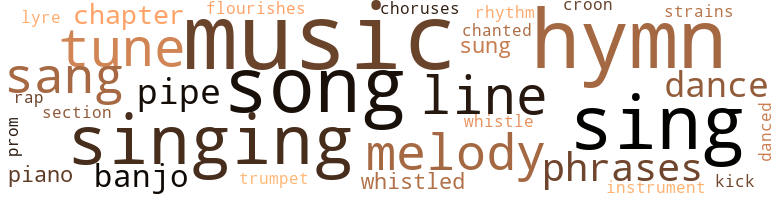
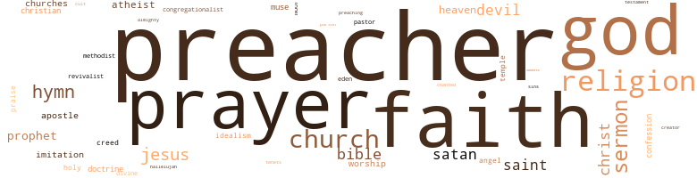

Confessions of a Negro Preacher, by Read, Opie (1928)
162 music-related terms matched in this text.
Most frequent terms in this topic: music (24); hymn (17); song (16); sing (15); singing (14)
banjo.n.01
Definition: a stringed instrument of the guitar family that has long neck and circular body
| word | sentence |
|---|---|
| banjo | From Mima 's quarters came a song and the strumming of a banjo . |
| banjo | I heard the banjo strumming . |
| banjo | Now listen : take your course at Tuskegee , when the time shall come , hide your education and with fingers that appear awkwardly to fumble , play upon the rude banjo of the Negro soul . |
chapter.n.01
Definition: a subdivision of a written work; usually numbered and titled
| word | sentence |
|---|---|
| chapter | I remember that once my attention had been called to a whole chapter in Hugo , slang as its subject , but Hugo made it leap with vitality . |
| chapters | for work in her garden I was requested to read to her the first chapters of my story . |
| chapter | And when the narrative was done I read aloud to his spirit the last chapter . |
chorus.n.01
Definition: any utterance produced simultaneously by a group
| word | sentence |
|---|---|
| choruses | " A concert company ? " the head waiter asked of him : " Yes , singing the choruses of the Lord . " |
cornet.n.01
Definition: a brass musical instrument with a brilliant tone; has a narrow tube and a flared bell and is played by means of valves
| word | sentence |
|---|---|
| trumpet | I spent no time with speaking of myself ; I began with the name of Jesus , pictured the crucifixion , the disciples drooping in sorrow and then blowing the trumpet of glory , the redemption of the sinner world . |
croon.v.01
Definition: sing softly
| word | sentence |
|---|---|
| croon | Mother had begun to croon a hymn , a habit with her when trouble began to brew , and one of my brothers , snatching up a fragment of mirror , brought it to me and told me to look at myself . |
dance.n.01
Definition: an artistic form of nonverbal communication
| word | sentence |
|---|---|
| dance | You must know that when I look at you a devil and an angel dance within me . |
| dance | I had met her often and especially when my bills were due , and to me she had given but slight attention , being somewhat lighter of skin than I , but now she bubbled , telling me that I had made her soul get right up and dance . |
dance.v.03
Definition: skip, leap, or move up and down or sideways
| word | sentence |
|---|---|
| dance | I completed one prayer , finishing it with numerous corrections and went to bed ; but in my dreams that elevator girl with painted lips came to dance before me . |
| dance | For the most part these people would rather dance than pray . " |
| danced | " David danced , " I told him . |
flourish.n.05
Definition: (music) a short lively tune played on brass instruments
| word | sentence |
|---|---|
| flourishes | It may be true that culture sinks into decay while barbarism flourishes , but culture with the Negro is still an almost untried experiment . |
hymn.n.01
Definition: a song of praise (to God or to a saint or to a nation)
| word | sentence |
|---|---|
| hymn | I know that it would , be a hymn set to melody by the heart throbs of the Saviour . |
| hymn | Over and over I read it , chanted it as a hymn , imitating the hoarse voice of the owl ; and in my fervor I thanked the Lord that He had so endowed me . |
| hymn | In my caution , I was about to turn away , when up arose a hymn , rude but sweet ; and I knew that I had halted at a Negro 's home . |
| hymn | Approaching gently I waited until the hymn was hushed , and then tapped on the door . |
| hymn | A voice set to music sweeter than a hymn bade me enter , and I did so , and there were the singers , a large Negro woman and two boys nearly grown . |
| hymn | Lou Ann arose and coming over to my chair , put about my neck her saintly arms and broke forth in song , the hymn that had banished my fear as I stood out in the dark . |
| hymn | Laboring thus I should not be suspected and as a field hand I could in safety sing a hymn as I worked . |
| hymn | Back to bed I crept , my heart singing , " Bleeged ter de Lawd , " a hymn ; slept in happy dreaming , sprang up with the coming of daylight to tell mother that I should always love her though I might marry the prettiest white girl in the neighborhood . |
| hymns | This is why nearly all effective hymns are sex odes . |
| hymn | " I know , Markeet , that you look a hymn . " |
| hymn | Mother had begun to croon a hymn , a habit with her when trouble began to brew , and one of my brothers , snatching up a fragment of mirror , brought it to me and told me to look at myself . |
| hymns | The old hymns had never been to me so sweet as when she sang them , and in Holcomb 's eye there were tears , a proof of his tender and religious soul . |
| hymn | The audience , cool at first , began to glow , and though there was but a sprinkling of Negroes , burst out in a hymn of gracious applause . |
| hymn | I resolved a trough into a mourner 's bench and exhorted the unconverted of my hearers to kneel before it and to beg forgiveness of their sins ; I sang a hymn that I had heard my mother sing . |
| hymns | Yes , the hymns and the confidential contact with women . |
| hymn | After a hymn and a prayer Wellsby came forward and in cool precision began to talk of the vital necessity of Negro missions in the South , a land so neglected and benighted . |
| hymn | What we wanted were the prayers of the people , hymn messages unto the Throne . |
| hymn | I took his frail hand and pressed it to my bosom , Aunt Silvy singing a hymn in measure with the action . |
| hymn | With a few cool sentences the evangelist introduced me , and the Negroes , thus flattered , broke forth in song , and before the hymn was ended my mind was teeming with emotional phrases hot from the furnace . |
| hymn | The undertaker was the only white man at the funeral , but the Negroes thronged about the grave to sing a hymn and to pray . |
kick.v.04
Definition: kick a leg up
| word | sentence |
|---|---|
| kick | ' The mule will kick his best friend . |
lyre.n.01
Definition: a harp used by ancient Greeks for accompaniment
| word | sentence |
|---|---|
| lyre | But I can be practical : Apollo could put aside his lyre to feed a cow . |
melody.n.02
Definition: the perception of pleasant arrangements of musical notes
| word | sentence |
|---|---|
| melody | I know that it would , be a hymn set to melody by the heart throbs of the Saviour . |
| melody | I was never so entranced with the continuous melody of a human voice . |
music.n.01
Definition: an artistic form of auditory communication incorporating instrumental or vocal tones in a structured and continuous manner
| word | sentence |
|---|---|
| music | There was no music to herald the orator 's approach , just an occasional cough and rather a mild clapping of hands as he came out upon the stage . |
| music | Upon reaching home early in the night I saw that Mima 's house was brilliantly lighted and that there was merriment , music , dancing . |
| music | Your buoyant heart ------- " " Keep up dem big words , Mistah ; das music ter me . " |
| music | It is not music but ideas that I wish to convey . |
| music | Her face was sweet in kindliness and her voice was the music of sympathy . |
| music | " I am - the poetry of prayer , writing it at night ; the saints , setting their breath to music , breathe upon me . " |
| music | This figure must have been of sudden birth for she laughed at it , the music of her voice echoing throughout the place . |
| music | A voice set to music sweeter than a hymn bade me enter , and I did so , and there were the singers , a large Negro woman and two boys nearly grown . |
| music | " As a gorilla is free , yes , " I answered her , seeking to be pleasant and in that way she took it , laughing , the sweetest music I ever heard . |
| music | Nearly every Negro has the endowment of music , and in poetry , in character , even in philosophy there is music . |
| music | Nearly every Negro has the endowment of music , and in poetry , in character , even in philosophy there is music . |
| music | It is the music rather than the truth set forth in philosophy that has caught the majority of the white races , and much more effectively this would be with the Negroes . |
| music | But educate him , touch him with the charred stick of metaphysics , and his music is gone . |
| music | She loved the music of words , and would make them melodious in her imitation of the educated white woman whom she had heard talk at meetings often held in the " big house . " |
| music | I was enraptured with the music but for the moral and political tirades I cared naught . |
| music | " Ha , but eloquence which often is but the music of ignorance , was ever soothing ; and the gospel was thought to be divinely effective whether preached unto man or jackal . " |
| music | And pouring out the music of her ever fetching laughter she seized the book and threw it across the the room . |
| music | I have heard you singing to yourself and I know that you love and are moved by music . |
| music | This is in accord with your race , for music , no matter how sublime , is still a barbaric emotion . |
| music | But as for the villain with his insult of hair , the cracking of his bones would be music sweeter than the twanging of harp strings . |
| Music | Music will always set aside a Negro 's logic , if indeed he be possessed of any , which the white man has been taught to doubt ; and within a few moments whatever of logic I may have possessed had flown away . |
| music | Last night at an organ recital I touched my beloved husband on the arm and told him that the great outburst of music was your poem , and he made like he would kiss me , right there in a crowded hall . " |
| music | And now , my Student , I believe that in the music of words you are to be a Blind Tom . |
| music | But there was music in his mind , a harmony , and we listened to its rhapsodies . |
| music | I would read a line and listen for an echoing music but it did not come . |
musical_instrument.n.01
Definition: any of various devices or contrivances that can be used to produce musical tones or sounds
| word | sentence |
|---|---|
| instrument | In truth I can sing it , but it shudders to be taken with the instrument of the pen . " |
phrase.n.02
Definition: a short musical passage
| word | sentence |
|---|---|
| phrases | He saw that she had not caught his meaning and in as simple phrases as he could employ , he explained to her that Brown had not only inspired Lincoln , but eventually the entire North . |
| phrases | Nothing is more potent than stock phrases warped and I warped them . |
| phrases | " Cato , search in a newer stock room for phrases . |
| phrases | A tall , grave man who bore the degree of doctor was the leader and I expected to hear him burst forth in a torrent of eloquence , but instead of buoying us on the tide of emotion he juggled cold phrases in denunciation of the degeneracy of the day . |
| phrases | With a few cool sentences the evangelist introduced me , and the Negroes , thus flattered , broke forth in song , and before the hymn was ended my mind was teeming with emotional phrases hot from the furnace . |
piano.n.01
Definition: a keyboard instrument that is played by depressing keys that cause hammers to strike tuned strings and produce sounds
| word | sentence |
|---|---|
| piano | We had no piano but in the room there was an old-fashioned melodeon , and through it she wheezed a tune and sang , and to me in a voice but little short of divine . |
| piano | You have heard me speak of Blind Tom , the most astonishing musical prodegy that this world has known , black , sightless and to those who attempted to talk with him , a mouth - frothing idiot ; but when first he touched the keys of a piano , melody , the songs of birds rippled from his fingers . |
pipe.n.04
Definition: a tubular wind instrument
| word | sentence |
|---|---|
| pipe | Brother Harris rode forward where he might boldly smoke his pipe , and sometimes upon looking at Holcmob I suspected that he would like to take a whiff of perhaps a drink if the bottle were passing . |
| pipe | The fat man , bald and with protruding teeth , sat smoking a pipe fashioned out of a small gourd . |
| pipe | " And I suppose , " he added , pointing his gourd pipe in my direction , " black boy here could tell us the same thing . " |
| pipe | My time came , and standing there I could not banish from my mind the fat fellow with his gourd pipe . |
promenade.n.01
Definition: a formal ball held for a school class toward the end of the academic year
| word | sentence |
|---|---|
| prom | " But tell me one thing , Master : in this land of prom - ise , your Kansas , is the Negro and the white boy on an equal footing ? " |
rap.n.05
Definition: genre of African-American music of the 1980s and 1990s in which rhyming lyrics are chanted to a musical accompaniment; several forms of rap have emerged
| word | sentence |
|---|---|
| rap | There came a rap at the door . |
rhythm.n.04
Definition: the arrangement of spoken words alternating stressed and unstressed elements
| word | sentence |
|---|---|
| rhythm | I know now that his style was too measured for prose , that he often thought more of rhythm than of strength ; but I was enraptured , coming down out of the place with my mind teeming with his figures . |
section.n.01
Definition: a self-contained part of a larger composition (written or musical)
| word | sentence |
|---|---|
| section | A tent revivalist came along , and a section of seats was apportioned to the Negroes . |
sing.v.02
Definition: produce tones with the voice
| word | sentence |
|---|---|
| sing | Laboring thus I should not be suspected and as a field hand I could in safety sing a hymn as I worked . |
| sung | " I have written prayers and have sung them . " |
| sing | My soul was buoyed with the ambition to sing , but they told me that I shrieked . |
| sing | Blink at what men term reason and sing the melody of the gospel . |
| sung | I told her that I had something important for her ears , and when in quick enthusiasm , I had sung my song , she smiled and said : " Yes , important for you . |
| sing | " You told me that you had burned with the ambition to sing and had been disappointed . |
| sing | " Cato , I know that I can sing . " |
| sing | I told him that Markeet , being a singer , was going along with us , and to this he offered no objection , either bluntly or with shrewdness ; but he said that he should like to hear her sing . |
| sang | We had no piano but in the room there was an old-fashioned melodeon , and through it she wheezed a tune and sang , and to me in a voice but little short of divine . |
| sing | You may convince a woman that she is not handsome , that she has a mediocre mind , but a woman with a notion that she can sing is as immovable as a mountain . |
| sang | After dinner Markeet sang again , an old love song ; but the preacher lead her back to the tunes of the repentant bench . |
| sang | The old hymns had never been to me so sweet as when she sang them , and in Holcomb 's eye there were tears , a proof of his tender and religious soul . |
| singing | " A concert company ? " the head waiter asked of him : " Yes , singing the choruses of the Lord . " |
| sang | One glorious diabetic sang out that he would give a thousand dollars . |
| sing | " That after a while I might sing as I rock a cradle . " |
| sings | I have looked into your petrified forest where never a dove sings her song . |
| sang | I resolved a trough into a mourner 's bench and exhorted the unconverted of my hearers to kneel before it and to beg forgiveness of their sins ; I sang a hymn that I had heard my mother sing . |
| sing | I resolved a trough into a mourner 's bench and exhorted the unconverted of my hearers to kneel before it and to beg forgiveness of their sins ; I sang a hymn that I had heard my mother sing . |
| singing | I have heard you singing to yourself and I know that you love and are moved by music . |
| sing | Oh , do n't think that you are Othello and that I a poor , loving fool , will sing before you choke me . |
| sang | Ah , but when she sang she astonished me . |
| sing | The grave yards are replete with the dust of men who never had time to play , to think , to sing a song ; and vanity prompted me to ask of myself a question : would these people halt to read my epic ? |
| sing | In Westminister Abbey there reposes not the dust of a Negro , and only one reminder of an American poet , but in this crypt of melodious glory I thanked God for the souls He had created to sing earth nearer unto the gates of heaven ..... . |
| singing | My wife , almost as dark as her husband , is of the woods , the fields ; and within my home I hear an old-time cradle rocking , and a mother 's voice sweetly singing to a child . |
| sing | In truth I can sing it , but it shudders to be taken with the instrument of the pen . " |
| singing | I took his frail hand and pressed it to my bosom , Aunt Silvy singing a hymn in measure with the action . |
| sing | The undertaker was the only white man at the funeral , but the Negroes thronged about the grave to sing a hymn and to pray . |
| sang | In the night , in the rain I walked forth to pray that God might smother the lustful beast within me , and I sang in the woods as I felt that my prayer had been answered . |
| sing | In my dreams my heroine would sing to me , and I could hear my hero , now turned preacher , melody his persuasive cadences . |
singing.n.01
Definition: the act of singing vocal music
| word | sentence |
|---|---|
| singing | The beautiful creature was my own , the soul of the song they were singing , and although several girls came up and made bold to kiss me , I did not taste the passion of their lips , tame compared with a feast awaiting . |
| singing | Markeet 's singing was delightful . |
| singing | It was ever a promising joy to me to hear her singing among the warm seekers for salvation for I knew that later she would be ardent within my hot embraces ....... . |
| singing | I heard Markeet and Holcomb singing in the parlor of the hotel . |
| singing | In my daytime musings I could see her , hear her singing as she stirred about the room . |
| singing | If I could find that wolf I would choke him to death and go singing to the scaffold . |
| singing | Do you believe that it is the singing at the mourner 's bench that makes the evangelist so passionate ? " |
| singing | Markeet 's mother went away singing , after she had drawn from me a promise to write to her . |
| singing | In the old yard , in the twilight , I could hear my mother 's Spirit singing , and into the cabin I went again to kneel at the hearthstone and to sprinkle ashes upon my head . |
| singing | One morning Shaver awoke me with his singing of a bawdy song , and when I hastened to him , thinking that he must have lost his mind , I found him sitting up in bed , holding in his hand not his pen , his pad , but the photograph of a half naked woman . |
song.n.01
Definition: a short musical composition with words
| word | sentence |
|---|---|
| song | From Mima 's quarters came a song and the strumming of a banjo . |
| song | To her many a tribute has been paid , by poet , the sculptor and the writer of immortal song , and if there be no heaven for merely the just , there ought to be one for her holy sake . |
| song | Lou Ann arose and coming over to my chair , put about my neck her saintly arms and broke forth in song , the hymn that had banished my fear as I stood out in the dark . |
| song | Can you hold to your ear a tiny egg and hear the song of the mocking bird ? |
| song | You can not , but the song is in that egg . " |
| song | I told her that I had something important for her ears , and when in quick enthusiasm , I had sung my song , she smiled and said : " Yes , important for you . |
| song | After dinner Markeet sang again , an old love song ; but the preacher lead her back to the tunes of the repentant bench . |
| song | NOT alone the choir but the entire congregation broke forth in song . |
| song | The beautiful creature was my own , the soul of the song they were singing , and although several girls came up and made bold to kiss me , I did not taste the passion of their lips , tame compared with a feast awaiting . |
| song | I wanted to see Markeet the mistress of a bright home , the perfume of the vines about the door mingling their sweet breath with the breath of an evening cradle song ; and then would come a twitch , for she had almost sworn against the rearing of a child . |
| song | I have looked into your petrified forest where never a dove sings her song . |
| song | The grave yards are replete with the dust of men who never had time to play , to think , to sing a song ; and vanity prompted me to ask of myself a question : would these people halt to read my epic ? |
| song | But inspiration is not a stroll : it is a leap , a fall from a height , and not so much of song as of outcry . |
| song | The soul of the Negro burst out in patriotic song . |
| songs | You have heard me speak of Blind Tom , the most astonishing musical prodegy that this world has known , black , sightless and to those who attempted to talk with him , a mouth - frothing idiot ; but when first he touched the keys of a piano , melody , the songs of birds rippled from his fingers . |
| song | One morning Shaver awoke me with his singing of a bawdy song , and when I hastened to him , thinking that he must have lost his mind , I found him sitting up in bed , holding in his hand not his pen , his pad , but the photograph of a half naked woman . |
| song | With a few cool sentences the evangelist introduced me , and the Negroes , thus flattered , broke forth in song , and before the hymn was ended my mind was teeming with emotional phrases hot from the furnace . |
tone.v.01
Definition: utter monotonously and repetitively and rhythmically
| word | sentence |
|---|---|
| chanted | Over and over I read it , chanted it as a hymn , imitating the hoarse voice of the owl ; and in my fervor I thanked the Lord that He had so endowed me . |
tune.n.01
Definition: a succession of notes forming a distinctive sequence
| word | sentence |
|---|---|
| tune | I came to talk to you about the future of your boy and I trust that you may not only catch my tune but my meaning . |
| line | " You could n't put a line of it on the stage , but it is the best Rube verse ever written . |
| line | " In that line she can put it all over the most of the white women I have ever met , but surely she has gone to school enough . |
| line | I could not tell her that I scorned the fellow 's line of barter . |
| line | In this line he surely could not raise himself above the white man . |
| melody | Blink at what men term reason and sing the melody of the gospel . |
| tune | We had no piano but in the room there was an old-fashioned melodeon , and through it she wheezed a tune and sang , and to me in a voice but little short of divine . |
| tunes | After dinner Markeet sang again , an old love song ; but the preacher lead her back to the tunes of the repentant bench . |
| melody | He told of the depth of my soul , religious by nature and by training , eulogised my mind which he said was a melody unto the Lord . |
| lines | I saw his hand reached out for the writing pad , and I fancied that inspiration must be making a map of his countenance , for in it appeared lines that I had not seen before . |
| tune | On the car he said but little , satisfying himself with the humming of a tune , but when we were seated in my dust-gathering home he was glib over his western project . |
| strains | And Cato , get in as many weepy strains as you can . " |
| lines | I wrote twenty lines and read them over , now a critic seeking flaws , found them not , and walked out into the human jungle to imagine myself in the woods . |
| line | You would let it run out to the extent of your long line , believing itself free , and then you would reel it in , then let it run again , thrilled with heartless joy when it leaped into the air . |
| tune | Grandad knew that it was the Negro 's sense of humor and his emotional love of tune that had kept him from becoming desperate or insane . |
| melody | Out of melody came the resigned conviction that the Lord may have imposed slavery in punishment committed by the black man along about the time when Noah 's grape vine sprouted . |
| melody | You have heard me speak of Blind Tom , the most astonishing musical prodegy that this world has known , black , sightless and to those who attempted to talk with him , a mouth - frothing idiot ; but when first he touched the keys of a piano , melody , the songs of birds rippled from his fingers . |
| tune | Den it peer ter hab mo ' tune ter it . " |
| line | Sometimes I would shut them out and give myself over to the reading of a new book , a sentence from a well-known writer having fastened itself upon me , " Read in your own line . " |
| melody | In my dreams my heroine would sing to me , and I could hear my hero , now turned preacher , melody his persuasive cadences . |
| tune | " Many a man has tried to feel that way but was finally forced to change his tune , " he remarked , giving me a sidewise glance . |
| tune | It is tune to me . " |
whistle.v.01
Definition: make whistling sounds
| word | sentence |
|---|---|
| whistled | He put his hand on my head , and so much at this moment did I feel like a faithful dog that had he whistled to me and " muched " me I would have licked his hand ........... . |
| whistled | An old man turned from his reminiscences of the time when he was a slave to ask me whither I was going , and when I told him , his toothless mouth whistled surprise that I was going so far . |
| whistle | I heard the whistle of the engine that drew it away and caught the last sound of the bell as the train sped toward that mighty mystery , the metropolis of the East . |
161 violence-related terms matched in this text.
Most frequent terms in this topic: fight (13); murder (12); kill (7); choke (7); hate (6)
abrasion.n.01
Definition: an abraded area where the skin is torn or worn off
| word | sentence |
|---|---|
| scratch | It was notable , too , that the boldest of these books were written by women , some of them maidens stepping freshly forth from school to sip forbidden juices and to feel upon their rosy ankles the scratch of the wild briar . |
anger.v.02
Definition: become angry
| word | sentence |
|---|---|
| angered | This angered the gathering mobs of white men and the massacre began . |
| angered | Out to the gate she walked with Moffet and there they stood , talking ; and angered because I could not hear what was said , I fumed and peeped through the window . |
| angered | But Dr. Frank Crane , sir , was the one who angered me . |
assassinate.v.01
Definition: murder; especially of socially prominent persons
| word | sentence |
|---|---|
| assassinated | " Senator , " he said , " the white part of me might have burnt witches at Salem but the Negro part never would have assassinated Lincoln . |
brush.n.06
Definition: a minor short-term fight
| word | sentence |
|---|---|
| skirmishes | There might come skirmishes but the warfare with myself was done . |
brutality.n.02
Definition: a brutal barbarous savage act
| word | sentence |
|---|---|
| barbarism | I had not caught the barbarism that would have made my work original . |
| barbarism | It may be true that culture sinks into decay while barbarism flourishes , but culture with the Negro is still an almost untried experiment . |
| barbarism | You have the barbarism of poetry within your soul . |
| barbarism | But all wise men know that after what may be termed the third state of barbarism all inspired prophets have languished and died . |
contemn.v.01
Definition: look down on with disdain
| word | sentence |
|---|---|
| scorn | I was a sinner called to repentance ; and if I were offered all the wisdom ever possessed by man in exchange for my simple faith , I would scorn it . " |
| scorned | I could not tell her that I scorned the fellow 's line of barter . |
| scorn | We may scorn it in words but must have it in act . |
| despise | He told me not to attempt to grasp at details , that my part lay wide from the material , and for this arose my gratitude , for if there be anything on this earth which my nature calls upon me to despise it is the measles of small business breaking out upon me . |
| scorned | And it seems to me that all education , no matter how acquired , prompts an inquiry into matters that old-time religion would have shied at or scorned . |
| despise | Is it not his training to despise happiness ? |
| despising | A frost-bitten hope is the saddest of all wilted flowers and homeward I went , despising the perfume wafted toward me from a garden . |
craze.n.02
Definition: state of violent mental agitation
| word | sentence |
|---|---|
| frenzy | Shaver 's home was in a village where the hoofs of the buffalo had marked the ground in sport and in sudden frenzy . |
destroy.v.04
Definition: put (an animal) to death
| word | sentence |
|---|---|
| destroy | You say that everything is Love , and yet God so hated the world that He would destroy it . |
dirk.n.01
Definition: a relatively long dagger with a straight blade
| word | sentence |
|---|---|
| dirk | He showed me his dirk and grinned , and going forth I slept in the dew-laden weeds . |
| dirk | On the following day I made bold to tell the boss about the miscreant and had the satisfaction to see him whipped out of the camp , his dirk serving him a very poor turn . |
draw.v.23
Definition: pull (a person) apart with four horses tied to his extremities, so as to execute him
| word | sentence |
|---|---|
| draw | Often at night , with the wind blowing through the cracks and flurrying our lamp , with the kettle-drum tat-too on the clap-board roof , he would draw up to the table and snatch up his pen and ink it to begin in answer to the call of a sudden inspiration , but never a word of his poem did I see him set in scroll . |
envy.n.01
Definition: a feeling of grudging admiration and desire to have something that is possessed by another
| word | sentence |
|---|---|
| envy | Even envy is cautious , not to say compliant , in the presence of the source of its income , and Brother Simon remarked that the same thought had occurred to him . |
fight.n.02
Definition: the act of fighting; any contest or struggle
| word | sentence |
|---|---|
| fighting | Lou Ann said there would be no need of fighting . |
fight.n.05
Definition: a boxing or wrestling match
| word | sentence |
|---|---|
| fights | Yes , sir , if the devil fights with fire , we 've got to use the same method . " |
| fight | The dogs gave us a welcome , their enthusiasm breaking out in an occasional fight ; and the mayor of the town , a man who could almost speak English , started us off with an initial jabber . |
| fight | Standing here in a public place and about to get into a fight over religion ! |
| fight | Are you willing that the fight should be thrown upon it ? |
fight.v.02
Definition: fight against or resist strongly
| word | sentence |
|---|---|
| fight | I have known white boys that would have risked their lives to fight for me , and yet if I had suggested that I sit at table with them they would have been outraged to the point of stabbing me . " |
| fight | The devil is n't meek , and we 've got to fight the devil , and you let a Christian start in to fight meekly and you 'll see where he lands . |
| fight | The devil is n't meek , and we 've got to fight the devil , and you let a Christian start in to fight meekly and you 'll see where he lands . |
| fight | Oldish Tom looked young with strength and moral determination , and taking me by the hand swore that his house should be my fort and that he and his boys would fight for me . |
| fought | One of the boys laughed , thinking it some sort of joke , but I bowed my grateful acknowledgements and said unto myself that I would make it one of the aims of my early life to cuff that boy for making me the object of his ridicule ; and a few days later we fought and though I conquered him it was not without the bloodying of the nose that the gentle lady on the horse had complimented . |
| fight | She did not fight me off but mingled with me , and within me I felt a glory surging , no ashes of a burnt prayerbook , no ambitious novel flaming in a fireplace , but the achievement of a panting soul . |
| fight | These are the men we have to fight , Cato . " |
| fight | The South can never become a political democracy , and it would take more men on the part of the North to enforce the black amendment to the constitution than it took to fight the Civil War . " |
| fight | Out to the tent came dogs to sniff and to fight . |
| defending | I am going to live by the bible and I expect to die defending it . |
| fight | " Millions are as well endowed to fight as you are , but not one in a million can so arouse men 's spirits toward victory . |
| fight | " I had thought that I should like to fight in the ranks . |
fistfight.n.01
Definition: a fight with bare fists
| word | sentence |
|---|---|
| fisticuffs | It seems to me that men of meek countenances are ever the most ready to engage in verbal fisticuffs , and I recall hearing a very old lady , referring to a young woman , remark that she looked sweet enough to be a hellion at home . |
fury.n.01
Definition: a feeling of intense anger
| word | sentence |
|---|---|
| fury | The bride arose as the wayfarer came into the yard , the preacher getting up too , but not quickly enough to avoid the lash of the whip , whirled by this saffron fury . |
| rage | Moffett called several times but I did not trust myself to look upon him , for I felt that I might fly into brutish rage and twist his scrawny neck . |
| fury | He does not seem to enter upon ideas but is ever ready to ' fly into a fury against a prevailing order . |
| rage | Holcomb was in a rage but held himself fairly well . |
| fury | Holcomb 's fury was breaking its bonds when Markeet sprang from her seat and came toward us . |
| fury | The Negro is of sudden fury and of instant gentleness , but is , I have read somewhere , incapable of holding revenge or gratitude . |
gag.v.06
Definition: cause to retch or choke
| word | sentence |
|---|---|
| choke | It 's a wonder you do n't choke me like Othello . " |
| choke | " Well , I do n't care if I have , you are none too good to choke me to death . |
| choke | Oh , do n't think that you are Othello and that I a poor , loving fool , will sing before you choke me . |
| choke | " I am not going to choke you , you treacherous she wolf . |
| choke | I am going to break his arms , pull out every strand of his hair , and choke him to death . |
| choke | If you get up I 'll choke the life out of you . |
| choke | If I could find that wolf I would choke him to death and go singing to the scaffold . |
| choked | The newspapers teemed with bloody reports , and one special writer said that the number of the slain would never be known , and that one morning a narrow place in the river was almost choked with dead bodies . |
gun.n.01
Definition: a weapon that discharges a missile at high velocity (especially from a metal tube or barrel)
| word | sentence |
|---|---|
| guns | Over his body I leaped in my flight , the noise of guns roaring from afar and barking near like vicious hounds . |
| gun | It was the beast that had played with the mouse , he told me , and swore an oath that led me to believe that he would have shot the miscreant had a gun been within his reach . |
harm.v.01
Definition: cause or do harm to
| word | sentence |
|---|---|
| harmed | " Madam , I was surely not harmed . |
hate.n.01
Definition: the emotion of intense dislike; a feeling of dislike so strong that it demands action
| word | sentence |
|---|---|
| hate | But had not even ministers , feeders from the trough of the gospel , kicked in deadly hate , one at another ? |
hate.v.01
Definition: dislike intensely; feel antipathy or aversion towards
| word | sentence |
|---|---|
| hate | In fact we have discovered that they do not hate the Negroes . |
| hated | You say that everything is Love , and yet God so hated the world that He would destroy it . |
| hate | I told her where you were , and to try her out I remarked that you were waiting for her to come back to you , and I hate to tell you what she said but I must . |
| hate | I told God that if He did exist the Negro ought to hate Him for his unjust discrimination . |
| hate | People like eloquence but they hate learning , and if you feel you would care to go on the platform we can make it to your financial interest . |
| hate | " I hate the world and all that is in it . |
hostility.n.02
Definition: a state of deep-seated ill-will
| word | sentence |
|---|---|
| enmity | I did not doubt the existence of God but bullied myself in enmity against Him . |
| enmity | The younger men found employment in the stock yards , not only employment but the enmity of foreigners who looked upon the Negro as an invader . |
indignation.n.01
Definition: a feeling of righteous anger
| word | sentence |
|---|---|
| outrage | " Have n't seen anything of a runaway nigger preach - er , have you , the one that tried to outrage a white woman ? " |
| outrage | But I kai n't look at er pusson an ' tell dat he er preacher an ' dat he try ter outrage . " |
| outrage | In a black-headed recital of my violent depravity I was charged not only with an attempt to outrage a white woman but that I had run away with twelve thousand dollars contributed toward the building of a Negro mission . |
injury.n.01
Definition: any physical damage to the body caused by violence or accident or fracture etc.
| word | sentence |
|---|---|
| harm | No harm has been done . |
jealousy.n.01
Definition: a feeling of jealous envy (especially of a rival)
| word | sentence |
|---|---|
| jealousy | In my nature there is no jealousy , and mark me , I am going to make you famous . " |
kick.v.04
Definition: kick a leg up
| word | sentence |
|---|---|
| kick | ' The mule will kick his best friend . |
kick_back.v.02
Definition: spring back, as from a forceful thrust
| word | sentence |
|---|---|
| kicked | But had not even ministers , feeders from the trough of the gospel , kicked in deadly hate , one at another ? |
kill.v.10
Definition: cause the death of, without intention
| word | sentence |
|---|---|
| kill | " When we completely kill the animal within us we shall have become too anemic not alone for the enjoyments but for the ordinary affairs of life . " |
| kill | Religion would kill itself with pure logic . |
| kill | You ought to be ashamed of yourselves , and besides , if it should get out among the people it would kill our collections in this town . |
| kill | But I am going to find Holcomb and kill him . |
| killed | " True enough , " Harris spoke up quickly , " and it is also known that when she found that she was to become the mother of his child she killed herself . |
| kill | If I could learn whither Holcomb and Markeet had fled would I seek them and kill - the man ? |
| kill | Would I kill her ? |
| killed | After a time she killed it and went away to enjoy her snack . |
| kill | I spoke , sprang up , and gripping my arm he jabbered that he would kill me if I gave him away . |
| killed | Now it was heavy on my conscience that I must have killed a human being , even though in self defence , and I prayed that it might not be true . |
| killed | " A man you never heard of , a genius who wasted his mind with so full a feeding that he killed his inspira - tion . " |
knife.n.02
Definition: a weapon with a handle and blade with a sharp point
| word | sentence |
|---|---|
| knife | In my bitterness I could have cut that man 's throat and sanctified the knife by wiping it on a leaf tom from the New Testament . |
| knife | In our neighborhood , off from the Boulevard , was a darky church and thither I went to hear a doctrinal sermon , an attempt to split hairs with a dull knife . |
murder.n.01
Definition: unlawful premeditated killing of a human being by a human being
| word | sentence |
|---|---|
| Murder | " Murder could never stand in your way - rape or murder , and that 's why you were chased up from the South . |
| murder | " Murder could never stand in your way - rape or murder , and that 's why you were chased up from the South . |
| murder | Oh , when it comes to murder , a nigger can be almost as bad as a white man . |
| murder | I told Him that it was of but little wonder that He had consented to the murder of His innocent Son . |
| murder | I love the man you would murder . |
| murder | " You would so far forget the mercy and forgiveness of the Saviour as to commit murder , I suppose . " |
| murder | " I should not deem it murder , but the justice of Jehovah . " |
| murder | In some way I would entrap him , murder him , ' stain a hankerchief with his blood and send it to Markeet . |
| murder | " So , I have revealed to you , Father , the murder that is within my heart . |
| murder | What compensation can vengeance find with the blood of murder on its hands ? |
| murder | When murder has been done , revenge dies the death of despair . |
| murder | He was a philosopher speaking the truth which the spirit of murder itself could not deny . |
| murder | Soon we learned that the de - generate had gone to a village to lodge a charge of attempted murder , and that having been recognised as a house-breaker , had been sent to jail for trial . |
murder.v.01
Definition: kill intentionally and with premeditation
| word | sentence |
|---|---|
| murdered | Whether or not the police had direct orders to shoot I know not , but they shot down men who had bom no part in bringing on the riot : they shot old men tottering toward their daily work and murdered boys hardly out of their teens . |
| slain | The newspapers teemed with bloody reports , and one special writer said that the number of the slain would never be known , and that one morning a narrow place in the river was almost choked with dead bodies . |
| murdered | At another time the beast within me would have pranced like a stallion , but sex , love , all within me had been murdered when I had walked from the post office with my frozen vanity beneath my arm . |
musket_ball.n.01
Definition: a solid projectile that is shot by a musket
| word | sentence |
|---|---|
| ball | I leave such filth to the daughters of women who bare their breasts at a ball . " |
pain.v.02
Definition: cause emotional anguish or make miserable
| word | sentence |
|---|---|
| hurt | would hurt us . |
| hurt | " Well , surely he is broad enough to feel that it did n't hurt him . |
| hurt | It hurt her , as she no doubt has made known to you . " |
| hurt | He 's got a strong pull with the ladies and that wo n't hurt us any . |
| hurt | When I told Wellsby that I had called upon the sapcrossing wizard he cracked his countenance with a sniff and said : " If that gets out it will hurt us . |
pistol.n.01
Definition: a firearm that is held and fired with one hand
| word | sentence |
|---|---|
| pistol | An officer approached me and gruffly told me that if I attempted to call the meeting together again a bloody consequence would follow ; and when I attempted to calm his violence he struck me with a heavy pistol , staggering me to my knees , with the blood gushing down into my eyes . |
| pistol | I was inexperienced enough to offer a gentle objection , and a drunken brute knocked me down with his pistol . " |
| pistol | And perhaps had you groveled more the policeman might not have hit you with his pistol . |
| pistol | I had not thought to go armed , my weapons being words , but now I buckled a pistol belt about me , longing for a sight of the wretch that had blasted my home . |
rape.n.03
Definition: the crime of forcing a woman to submit to sexual intercourse against her will
| word | sentence |
|---|---|
| assault | But what was this strange question seeking to break in upon me : Would I , unattached , be morally strong enough to resist the insinuating assault of a beautiful and voluptuous woman ? |
rape.v.01
Definition: force (someone) to have sex against their will
| word | sentence |
|---|---|
| ravish | " I 'll ravish you with kisses . " |
resentment.n.01
Definition: a feeling of deep and bitter anger and ill-will
| word | sentence |
|---|---|
| bitterness | In my bitterness I could have cut that man 's throat and sanctified the knife by wiping it on a leaf tom from the New Testament . |
| bitterness | But I found that the bitterness of disappointed ambition was still in my heart . |
| resentment | " I mean if a Negro should ask you to marry him your white blood would fly up in resentment . " |
| resentment | " Of all the men I ever met you are the strangest , " she said , and with a want of resentment that to me was pleasing . |
| resentment | A moonbeam fell upon his frothy mouth to reveal a beady sneer , and in my resentment I was tempted to hurl a stone at him , indeed , had turned about to seek one when there stood my teacher , a darkened statue with folded arms . |
| Bitterness | " Bitterness is but a bad exhorter and would win only sneers for the contribution box . |
| bitterness | My bitterness spoke : " The story of life is too often the warming pan of tragedy . " |
| resentment | After giving out my text my first sense of feeling was of resentment against Brother Simon for his cautioning advice , and while in no wise dropped I a hint of it , I was warmed by it . |
resist.v.04
Definition: withstand the force of something
| word | sentence |
|---|---|
| resist | But what was this strange question seeking to break in upon me : Would I , unattached , be morally strong enough to resist the insinuating assault of a beautiful and voluptuous woman ? |
riot.n.01
Definition: a public act of violence by an unruly mob
| word | sentence |
|---|---|
| riot | Prosperity and a disposition to laugh do riot combine to form a good atmosphere for a religious revival . |
| riot | Whether or not the police had direct orders to shoot I know not , but they shot down men who had bom no part in bringing on the riot : they shot old men tottering toward their daily work and murdered boys hardly out of their teens . |
| riot | The riot extended throughout several days , and I remember that a Negro waiter in a political club of white men , telephoned that he did not dare venture out into the street , even in the very heart of the city . |
| riot | Did you experience any hardship during the riot ? " |
| riot | Have such books ever kept down a riot ? |
| riots | Race riots were forgotten . |
savageness.n.01
Definition: the property of being untamed and ferocious
| word | sentence |
|---|---|
| savagery | And yet I could feel that had it not been for ambition the world would have never arisen out of savagery , intellectual ambition such as possessed me and made of me its slave . |
| savagery | WHILE the revival was at its height , promising to be a noted awakening , there fell upon the Negro population of the city a calamity , a race war of heartless savagery . |
shoot.v.02
Definition: kill by firing a missile
| word | sentence |
|---|---|
| shot | For a moment I stood to curse myself , and then my Negro instinct shot me through the brain . |
| shot | Back shot the bolt , the door flew wide and she was in my arms . |
| shot | It was the beast that had played with the mouse , he told me , and swore an oath that led me to believe that he would have shot the miscreant had a gun been within his reach . |
shooting.n.02
Definition: killing someone by gunfire
| word | sentence |
|---|---|
| shooting | But what was that light shooting skyward ? |
sic.v.01
Definition: urge to attack someone
| word | sentence |
|---|---|
| set | She has her heart set on my marriage with Moffett . " |
slang.v.03
Definition: abuse with coarse language
| word | sentence |
|---|---|
| slanged | " Not on your life , " I slanged her . |
slaughter.n.03
Definition: the savage and excessive killing of many people
| word | sentence |
|---|---|
| massacre | I look back upon an awful time , a massacre of Negroes . |
| massacre | This angered the gathering mobs of white men and the massacre began . |
| slaughter | Then look at the human family , dull in the plod of business except when it goes to war and then brutal in slaughter . " |
sting.n.03
Definition: a painful wound caused by the thrust of an insect's stinger into skin
| word | sentence |
|---|---|
| bite | Well , I must see about getting a bite to eat . " |
| bite | I told her to sit down and I 'd get her a bite to eat . |
strangle.v.01
Definition: kill by squeezing the throat of so as to cut off the air
| word | sentence |
|---|---|
| strangle | Now I am going to sit down here and if you get out of that bed I 'll strangle you . |
strong-arm.v.02
Definition: be bossy towards
| word | sentence |
|---|---|
| bullied | I did not doubt the existence of God but bullied myself in enmity against Him . |
suicide.n.01
Definition: the act of killing yourself
| word | sentence |
|---|---|
| suicide | Well could I understand why men committed suicide , ah , but not black Negroes . |
sword.n.01
Definition: a cutting or thrusting weapon that has a long metal blade and a hilt with a hand guard
| word | sentence |
|---|---|
| sword | " Ha , and Peter ought to have had more patience when he drew his sword , I suppose . " |
| sword | " Ha , but afterward He told him to sell raiment to buy a sword . |
torment.v.01
Definition: torment emotionally or mentally
| word | sentence |
|---|---|
| torture | And now how easily it came and flowed , so different from the rhythm-goddess that flitted about poor Andrew Shaver to torture him . |
violence.n.01
Definition: an act of aggression (as one against a person who resists)
| word | sentence |
|---|---|
| violence | An officer approached me and gruffly told me that if I attempted to call the meeting together again a bloody consequence would follow ; and when I attempted to calm his violence he struck me with a heavy pistol , staggering me to my knees , with the blood gushing down into my eyes . |
war.n.03
Definition: an active struggle between competing entities
| word | sentence |
|---|---|
| warfare | There might come skirmishes but the warfare with myself was done . |
| warfare | Why was my bosom a rebellious ground wherein warfare was continuously waged ? |
weapon.n.01
Definition: any instrument or instrumentality used in fighting or hunting
| word | sentence |
|---|---|
| weapons | I had not thought to go armed , my weapons being words , but now I buckled a pistol belt about me , longing for a sight of the wretch that had blasted my home . |
| weapon | But caution had preserved my sandstone weapon , and at him I threw it , and down he fell , almost at my feet . |
weather.v.01
Definition: face and withstand with courage
| word | sentence |
|---|---|
| brave | You are a brave and unselfish little fellow . " |
| brave | He may have been physically as brave as Hotspur , but I could but feel that he was morally timid . |
| brave | The brave tenderness of the men who wore the cross and the angelic sympathy of women dressed in black . |
| brave | I spent all of one Sunday writing to Shaver , giving him a full , not to say a proud account of my close escape , and this is a part of his letter to me : " I con - gratulate you , my brave Student . |
| brave | He was tall , what we called raw-boned , and must have been as brave as Caesar . |
whip.v.04
Definition: strike as if by whipping
| word | sentence |
|---|---|
| lash | The bride arose as the wayfarer came into the yard , the preacher getting up too , but not quickly enough to avoid the lash of the whip , whirled by this saffron fury . |
wound.n.01
Definition: an injury to living tissue (especially an injury involving a cut or break in the skin)
| word | sentence |
|---|---|
| wound | Fortunately the wound was not deep and within a few hours I was able again to walk about , but did not venture into the street . |
619 religion-related terms matched in this text.
Most frequent terms in this topic: preacher (89); faith (66); God (51); religion (48); prayer (46)
amen.n.01
Definition: a primeval Egyptian personification of air and breath; worshipped especially at Thebes
| word | sentence |
|---|---|
| amens | One groan from a sinner is worth more than a dozen amens from the deacon 's bench . |
apostle.n.03
Definition: (New Testament) one of the original 12 disciples chosen by Christ to preach his gospel
| word | sentence |
|---|---|
| apostle | I must have come upon him at a time when the apostle within him condemned the man . |
| apostles | " I do n't see why my beard should be resented on the part of the public , " I told him , and then after another look at the touch of sanctimony in his countenance : " Bearded men foretold the coming of the Saviour , and bearded apostles spread the gospel . " |
| apostles | In one respect he had , I discovered , the inclination of the early apostles in that he expressed his fondness for fishing ; and when in answer to an inquiry I told him that I had never caught a fish , having no desire in that way , he called me an unnatural boy . |
| apostles | " Unless you should be in need of food like the apostles , " said Shaver , smiling at me . |
| apostles | " Well hit off , brother , yes ; and like the apostles I shall divide my fish food among the hungry . |
atheist.n.01
Definition: someone who denies the existence of god
| word | sentence |
|---|---|
| atheist | " Then of course no atheist can be a man of glorified wisdom , " said Mrs. Hester . |
| atheist | I did , looked , shud ' dered , swore an oath that I had heard the " Guinea nigger " employ , and was an atheist until the love of my mother brought me back to faith . |
| atheist | The most poverty stricken may be an atheist . |
| atheist | The other night a man told me that he had been reading Ingersoll until he was an avowed atheist , but that your eloquence had so painted the Cross that he could see it and that now he had decided to join the flock . " |
| atheist | " Oh , Cato , you are getting to be an atheist , and Mr. Wellsby says that there 's nothing sadder than a Negro skeptic . |
| atheist | For a time I walked up and down the boulevard , an atheist . |
bible.n.02
Definition: a book regarded as authoritative in its field
| word | sentence |
|---|---|
| bible | I know in my soul that the bible is the word of God , and yet you almost make me question it . |
| bibles | Many a one of their breed had been freighted with bibles , laboring toward the top of a frontier mountain . |
| bible | The school has not improved upon the poetry of the bible . " |
| bible | But there may be new estimates of the bible , in a poetic way , I mean . |
| bible | You believe in the bible , I take it , Mr. Harding ? " |
| bible | Stick to your bible and leave evolution to bald headed scientists . " |
| bible | There is plot in the bible . |
| bible | When a Negro is to be hanged he requests a bible . |
| bible | I took up my bible and sat down near the window , looking out toward the gate . |
| bible | Man was closer to the Lord when there was only one book , and sometimes I feel like I 'd burn 'em all up , except the bible . " |
| bible | I believe in the bible and I do n't care how many wise men know it . |
| bible | If the bible says that a great fish swallowed Jonah , I feel that it was true . |
| bible | I am going to live by the bible and I expect to die defending it . |
| bible | The bible does n't tell us to vote but to give . |
christian.n.01
Definition: a religious person who believes Jesus is the Christ and who is a member of a Christian denomination
| word | sentence |
|---|---|
| Christian | You smile at a Christian 's simpleness when he says he believes in the God-inspired book , but is not a sneering disbelief a sort of unbolstered arrogance ? " |
| Christian | Some of the women were no doubt honest , but Mrs. Hester and Mrs. Conner were surely not members of the Woman 's Christian Temperance Union . |
| Christian | And let me ask if you could be a complete Christian without forgiving him ? " |
| Christian | Negro boy 's in the South would not have been so brutal toward a stranger , and this set me to think that it was the white as well as the black race in this country that was in Christian need of reformation . |
church.n.02
Definition: a place for public (especially Christian) worship
| word | sentence |
|---|---|
| church | You know that I must not wholly neglect my church : I must run in at least once a week . " |
| church | Night , and onward I wandered , being sure of only one direction , that it pointed away from my church . |
| church | " I was , and my church split . |
| church | It did not require much of insight to gather from him the notion that Re was of the church . |
| church | I go to church every Sunday , and Markeet with me the most of the time . |
| church | In church the negroes raised a lamentation , a wail that soon spread out among the whites , and blessed be their souls , a committee of sympathetic ladies took up a subscription and built for us a better house , a palace it seemed to me . |
| church | He told us that the Negroes were preparing for a great revival within the near future , having been granted the largest church in the city . |
| church | The spokesman told me that his church was looking about for a minister , and that he believed I could more than meet every expectation . |
| church | Brother Harris , the spokesman , told me that his church was modest and far from being large , and I could have answered that were it only a shanty to me it would appear a palace , but kept my enthusiasm and the most of my gratitude to myself . |
| church | I have talked to Brother Harris of the immense amount of good you might do , and he agrees to release you within two months from now , having it understood that your church here is always ready to welcome your return . " |
| church | It is near the church , is not too large and can be easily kept . " |
| church | To this I brought forward the objection that every community in the South had a Negro church . |
| churches | devote the remainder of the money toward the building of Negro churches , ca n't we ? |
| church | I have n't time to go to church , you know . " |
| church | This completion was laid out for me ; and one of these days when you turn about from entering the palatial church which your genius has reared , you will for a moment contemplate the monument erected to me , the poet of the heart . " |
| church | In a flash I could see my church , his monument standing near it , and it seemed that the tears that came into my eyes made it all the brighter , without a dark shadow to dim it . |
| church | Shortly after my return a committee from a church in New Albany , Indiana called on me with a request that I lend my services at a revival meeting soon to be set ablaze . |
| church | He had begun to believe , he said , that the college was the enemy of the church and therefore of the Lord . |
| church | One of these days he will build a palace church and install you as pastor . |
| church | Upon reaching Indianapolis I realized that I was no longer the pastor of a church . |
| churches | I told him that I should like to preach an experimental sermon in one of the Negro churches . |
| church | In our neighborhood , off from the Boulevard , was a darky church and thither I went to hear a doctrinal sermon , an attempt to split hairs with a dull knife . |
| church | I suppose you have revivals here in your church . " |
| church | " I have agreed that you may preach a sermon next Sunday in my church , " said he . |
| church | He mistook napping in church for metaphysical estimation . |
| church | Up came the Negro lawyer and with him the banker boss of the church , Brother Watson . |
| church | This all warned me against making myself too prominent in this town whither came so many southern folk to spend the summer , and I was even resolved to stay away from the church where I had made so many instantaneous friends . |
| church | " I believe , brother , that a modest outlying church might suit me better . |
| churches | " But you must know that hereabouts there are no outlying Negro churches . |
| church | I have been the means of many a conversion ; I have dedicated many a Negro church , only to be convinced that there is something else other than religion that the Negro needs . |
| church | A few days later I received a call to take a church in a small town about fifty miles away , and thither I carted my belongings . |
| church | The church was new , painted white , and gleamed in the sunshine as I drew unto it to preach my initial sermon . |
| church | Toward my church I neglected no duty , but was happiest when my work in the meeting house was done that I might shut myself up among the figures that pressed forward for a place in my story . |
| church | I ca n't leave my church just at this time . " |
| church | It was not that I hesitated to leave my church ; it was that I should stay close to my town to hear the enraptured report of my publishers . |
| church | The slow evening came , prayer meeting night in my church , and while a brother was leading the service , I was on my knees praying the Lord to smite the publishers with failure and disgrace . |
church.n.04
Definition: the body of people who attend or belong to a particular local church
| word | sentence |
|---|---|
| church | A few days later she was married in our church , the husband preaching to us after the ceremony . |
| church | I had preached several times in my own church when at the close of a sermon came a gentleman , tall blond of type , polished of manner , a preacher I knew and a white man free of prejudice toward the Negro race . |
| churches | Let it be known that we are working to establish mission churches for the Negroes throughout the South . " |
| church | Their Greek church looked with contempt upon our simple worship , a priest of their order had told us . |
| churches | Look at the numbers we have added to local churches . |
| church | He took my hand , making no difference between me and the white man that came forward to shake with him ; and I remember that one old fellow , a preacher I could see , was quick with , a never-failing question : " Doctor , what is the matter with the church ? " |
| church | The church is built upon a rock . " |
| church | Madam , I have been forced almost to believe that religion is a sort of slavery and that the church is a shop where the chains are forged . " |
| church | The church puts a premium upon compliant dullness . |
confession.n.05
Definition: the document that spells out the belief system of a given church (especially the Reformation churches of the 16th century)
| word | sentence |
|---|---|
| confession | Then to him I made a full confession , and I do not believe that any human being had ever looked upon me in so sympathetic an interest . |
| confession | The deepening of the night called for confidences , and fearlessly I made my confession . |
| confession | I had told her too much and now it was up to me to lie or to make a full confession . |
| confession | I must he or make a full confession . |
congregationalist.n.01
Definition: a member of the Congregational Church
| word | sentence |
|---|---|
| Congregationalist | " Yes , a Congregationalist . |
| Congregationalist | " Ah , and I do not remember ever to have met a colored Congregationalist . |
creed.n.01
Definition: any system of principles or beliefs
| word | sentence |
|---|---|
| creed | Whenever he found that the majority sided largely with him , he made his utterance bolder , and " without the fear of successful contradiction , " shout an aphorism of his political creed . |
| creed | I am much older than you , and have been schooled into creed discussion . |
| creed | He said not a word about his creed . |
cult.n.03
Definition: followers of an unorthodox, extremist, or false religion or sect who often live outside of conventional society under the direction of a charismatic leader
| word | sentence |
|---|---|
| cult | " A woman is always the first to take up with a fool cult that comes along , " he said , casting , I thought , at the Scientist . |
curate.n.01
Definition: a person authorized to conduct religious worship
| word | sentence |
|---|---|
| parson | My new visitor was as typical a parson as I have ever seen . |
| pastor | One of these days he will build a palace church and install you as pastor . |
| pastor | Upon reaching Indianapolis I realized that I was no longer the pastor of a church . |
divine.v.01
Definition: perceive intuitively or through some inexplicable perceptive powers
| word | sentence |
|---|---|
| divine | Could divine love sooth his mortal agony ? |
doctrine.n.01
Definition: a belief (or system of beliefs) accepted as authoritative by some group or school
| word | sentence |
|---|---|
| doctrine | Funny doctrine he has , is n't it ? " |
| doctrine | I was itching to preach for I knew that his people were tired of doctrine , and I dropped him a hint but , as the saying goes , he ducked it ..... . |
| doctrine | I wanted to preach to that congregation stuffed with doctrine . |
| doctrine | Of doctrine they take a metaphysical view , you understand . " |
dogma.n.01
Definition: a religious doctrine that is proclaimed as true without proof
| word | sentence |
|---|---|
| tenets | " Now , my dark brother , I am a Methodist , free from the hardening and I sometimes fancy the almost heartless tenets of Calvin , yet I can not but feel that you and I are destined to combine and to do a notable work . |
eden.n.01
Definition: any place of complete bliss and delight and peace
| word | sentence |
|---|---|
| heavens | One moment of ecstacy , her lips ; and then a shriek that seemed to pierce the heavens . |
| heaven | To her many a tribute has been paid , by poet , the sculptor and the writer of immortal song , and if there be no heaven for merely the just , there ought to be one for her holy sake . |
| heaven | There have been epics of wars on earth , in heaven , and an epic of the tortures of hades , but never an epic of the human heart , which means God 's heart . |
| heavens | By the eternal heavens it would mean the established senility of man . |
| Eden | " And Brother , he entered Eden also . " |
| Eden | " Satan was not in Eden by the Lord 's command . " |
| heaven | " Cato , we are not flaunting the God-favored fortune of our finding each other , in truth we must pose as man and wife under the law , but we seek not to hide our state from , heaven where true matches are made . |
| heaven | In Westminister Abbey there reposes not the dust of a Negro , and only one reminder of an American poet , but in this crypt of melodious glory I thanked God for the souls He had created to sing earth nearer unto the gates of heaven ..... . |
| heavens | It will come back , however , and with achieving result , perhaps during a thunder storm when the cloud-curtains shall be ripped by lightning and burnt up like dried grass , the wind-rows of the heavens . |
evangelist.n.01
Definition: a preacher of the Christian gospel
| word | sentence |
|---|---|
| revivalist | To our last town we came , and I felt that my career as a revivalist was entering upon its close . |
| revivalist | A tent revivalist came along , and a section of seats was apportioned to the Negroes . |
god.n.03
Definition: a man of such superior qualities that he seems like a deity to other people
| word | sentence |
|---|---|
| God | This I know now , but then in that sprouting seed time of my mind , I imag - ined him a power holding himself in willful subjection , thinking to serve God by humbly giving his talents toward the help of the Negro . |
| God | You have come to me frankly , and I do not wish to project an uneasiness into your mind , but I must say to you that a personal God is just as impossible as Personal Nature . " |
| God | But belief in a revengeful God is not innocent . |
| God | More than one divine schooled into belief that God had called him to preach has sent to me a written prayer in which he implored the Lord if He should find it convenient , to save my soul . |
| God | The Negro is one of God 's creatures , endowed with an immortal soul , and souls have no color . " |
| God | In many ways the poet may go wrong but whithin his soul there is inspiration , the truest love of God . " |
| Gods | Was it not within Gods province to create purity ? |
| God | We are all the children of God and therefore have the same destiny . " |
| God | Do you believe in a personal God ? " |
| God | " I pray , sir , that my belief in a personal God may become stronger . " |
| God | Do away with a personal God and you wipe out all life and all eternity . |
| God | God is the personal image of all humanity . |
| God | God spoke , and the impersonal can not speak . |
| God | God walked in the garden and Adam saw him . |
| God | If God is not personal Jesus was not personal , and if Jesus was not , neither are we . |
| God | And now let me tell you that the most dangerous error man can commit is to let the books written by the enemies of God stultify his mind . |
| God | I must believe so devoutly in a personal God as to feel his enwrapping presence , a mood which we can not summon at will though we grovel on our knees for it . |
| God | In my hiding place I sought to pray , but how could I give myself to God when the devil so possessed me ? |
| God | My novel , once the fondest hopes that I shall ever cherish , had gone to the stake , and now my rhythmic supplications unto God had been blown away with a blast . |
| God | The sincerest prayer is inspired by agony , and now it was not for fame , for a monument , but that God might save my life . |
| God | " And God at the same time ? " |
| God | Evolution does not deny God . " |
| God | " God 's weather or evolution 's weather ? " |
| Gods | " Is man Gods experiment ? " |
| God | " Yes , and to the degree that God once repented that He had created him . " |
| God | " Continue to serve God 's experimental purposes , " he said . |
| God | Once in the night I prayed to God to make me white , and so strong was my simple faith that I believed my prayer answered ; and then suffered there in the darkness to think that my mother , the purest saint of this earth , must remain black . " |
| God | " Yes , Madam , the soul that wanders off from God , " I said . |
| God | " But whose soul is wandering off from God ? |
| God | There have been epics of wars on earth , in heaven , and an epic of the tortures of hades , but never an epic of the human heart , which means God 's heart . |
| God | You say that everything is Love , and yet God so hated the world that He would destroy it . |
| God | Jesus was the God of suffering and of sorrow . |
| Gods | Everything save Gods eternal truth is a failure , " I added , thinking to get at his religious views . |
| God | " Yes , sir , a woeful failure that all men do not agree upon God 's truth . |
| God | I did not doubt the existence of God but bullied myself in enmity against Him . |
| God | The devil can have no power except that God grants it to him , and God granting it stands in with him . |
| God | The devil can have no power except that God grants it to him , and God granting it stands in with him . |
| God | " No , and I must not forget that he upbraided God for deserting Him . |
| God | And if I thought that the God of vengeance would assist me , I 'd get down on my knees and lick the dust from his feet . |
| God | And yet the God who favored him would command that I should temper my words with gentleness . |
| God | " Now brother , there is no need of drawing the name of God into it . |
| God | However , I shall say this , that only for mothers ----- , " " No man would ever have been born , by God ! " he roared with laughter . |
| God | God do n't care anything about politics . |
| God | Nature is the daughter of God and you are trying to debase her . ' |
| God | " But Mr. Burbank , I have called in profound respect , " said I. " To me , sir , no matter what your religious belief may be , you are illustrating the infinite artistry of God . |
| God | Get down to this , Brother : you believe in God or you do n't and that 's all there is to it . " |
| God | God inspired all soul love . |
| God | I told God that if He did exist the Negro ought to hate Him for his unjust discrimination . |
| God | " Ah , that I stand in need of telling God that He ought to change His mind . |
| God | I must call God 's attention to something that He has neglected . " |
| God | " No , but you must show to God your humble heart , Mr. Darrow . " |
| God | In Westminister Abbey there reposes not the dust of a Negro , and only one reminder of an American poet , but in this crypt of melodious glory I thanked God for the souls He had created to sing earth nearer unto the gates of heaven ..... . |
| god | We were halting at a station and as the preacher gathered up his bag to get off , he turned to me : " The white man 's god is money . |
| God | And then , God bless her soul , her angelic spirit lifted my leaden heart . |
| God | In the night , in the rain I walked forth to pray that God might smother the lustful beast within me , and I sang in the woods as I felt that my prayer had been answered . |
godhead.n.01
Definition: terms referring to the Judeo-Christian God
| word | sentence |
|---|---|
| Almighty | I was in a humor to listen to flaws picked in the annals of the Almighty . |
| Creator | " Yes , for one would think that the Creator is endeared of the commonplace . |
| divine | We had no piano but in the room there was an old-fashioned melodeon , and through it she wheezed a tune and sang , and to me in a voice but little short of divine . |
hallelujah.n.01
Definition: a shout or song of praise to God
| word | sentence |
|---|---|
| hallelujah | I bellowed a hallelujah of the heart , believing in my soul that I was to help my people , and when I had hushed , they arose with a shout and came with a rush to head me off as I left the tent . |
holy_place.n.01
Definition: a sacred place of pilgrimage
| word | sentence |
|---|---|
| Holy | He had a book , just out , that would address itself to the mind of the colored man , and he brought it forth , a bulky volume , brass-clasped and entitled , " A Tramp Through the Holy Land . " |
| Holy | In the Holy Land ! |
| Holy | Holy City ! |
hymn.n.01
Definition: a song of praise (to God or to a saint or to a nation)
| word | sentence |
|---|---|
| hymn | I know that it would , be a hymn set to melody by the heart throbs of the Saviour . |
| hymn | Over and over I read it , chanted it as a hymn , imitating the hoarse voice of the owl ; and in my fervor I thanked the Lord that He had so endowed me . |
| hymn | In my caution , I was about to turn away , when up arose a hymn , rude but sweet ; and I knew that I had halted at a Negro 's home . |
| hymn | Approaching gently I waited until the hymn was hushed , and then tapped on the door . |
| hymn | A voice set to music sweeter than a hymn bade me enter , and I did so , and there were the singers , a large Negro woman and two boys nearly grown . |
| hymn | Lou Ann arose and coming over to my chair , put about my neck her saintly arms and broke forth in song , the hymn that had banished my fear as I stood out in the dark . |
| hymn | Laboring thus I should not be suspected and as a field hand I could in safety sing a hymn as I worked . |
| hymn | Back to bed I crept , my heart singing , " Bleeged ter de Lawd , " a hymn ; slept in happy dreaming , sprang up with the coming of daylight to tell mother that I should always love her though I might marry the prettiest white girl in the neighborhood . |
| hymns | This is why nearly all effective hymns are sex odes . |
| hymn | " I know , Markeet , that you look a hymn . " |
| hymn | Mother had begun to croon a hymn , a habit with her when trouble began to brew , and one of my brothers , snatching up a fragment of mirror , brought it to me and told me to look at myself . |
| hymns | The old hymns had never been to me so sweet as when she sang them , and in Holcomb 's eye there were tears , a proof of his tender and religious soul . |
| hymn | The audience , cool at first , began to glow , and though there was but a sprinkling of Negroes , burst out in a hymn of gracious applause . |
| hymn | I resolved a trough into a mourner 's bench and exhorted the unconverted of my hearers to kneel before it and to beg forgiveness of their sins ; I sang a hymn that I had heard my mother sing . |
| hymns | Yes , the hymns and the confidential contact with women . |
| hymn | After a hymn and a prayer Wellsby came forward and in cool precision began to talk of the vital necessity of Negro missions in the South , a land so neglected and benighted . |
| hymn | What we wanted were the prayers of the people , hymn messages unto the Throne . |
| hymn | I took his frail hand and pressed it to my bosom , Aunt Silvy singing a hymn in measure with the action . |
| hymn | With a few cool sentences the evangelist introduced me , and the Negroes , thus flattered , broke forth in song , and before the hymn was ended my mind was teeming with emotional phrases hot from the furnace . |
| hymn | The undertaker was the only white man at the funeral , but the Negroes thronged about the grave to sing a hymn and to pray . |
idealism.n.01
Definition: (philosophy) the philosophical theory that ideas are the only reality
| word | sentence |
|---|---|
| idealism | " Oh , you mean mar - riage as an idealism . " |
| Idealism | " Idealism and especially religious idealism is ennobling , " he said , calling me Cato after the manner of my wife . |
| idealism | " Idealism and especially religious idealism is ennobling , " he said , calling me Cato after the manner of my wife . |
imitation.n.01
Definition: the doctrine that representations of nature or human behavior should be accurate imitations
| word | sentence |
|---|---|
| imitation | She loved the music of words , and would make them melodious in her imitation of the educated white woman whom she had heard talk at meetings often held in the " big house . " |
| imitation | But it would n't be like this one you know , " and in imitation of the little fellow she touched my face . |
| imitation | It was not an imitation ; it was an inspired ambition , and it seems to have been known of me by mother before I recognised it within myself . |
| imitation | I told you that I am of French extraction and that I have no prejudice against the Negro , but I do believe that a Negro can go too far in his imitation of the white man . |
| imitation | Even at its best it is imitative , and granting that this work was done wholly by a Negro it is but an imitation of Homer and his imitators . |
jesus.n.01
Definition: a teacher and prophet born in Bethlehem and active in Nazareth; his life and sermons form the basis for Christianity (circa 4 BC - AD 29)
| word | sentence |
|---|---|
| Jesus | " Madam , there must surely have been profound men before the name of Jesus had been spoken . |
| Jesus | They call themselves Christians , but had Jesus been of the order he would have put the Roman coin into his pocket . ' " |
| Jesus | If God is not personal Jesus was not personal , and if Jesus was not , neither are we . |
| Jesus | If God is not personal Jesus was not personal , and if Jesus was not , neither are we . |
| Jesus | You would not as Jesus did , cry out in his last hour . |
| Jesus | Jesus was the God of suffering and of sorrow . |
| Jesus | There is more of vital wisdom in one sentence from Jesus than in all the universities ever reared by man . " |
| Jesus | Once I told her that Jesus would have sat with a Negro at the last supper , and she laughed , the humorous thing , and said that if He had He never could have found followers in Alabama . " |
| Jesus | No creature , even approaching death , ever gave unto Jesus a more humbled soul . |
| Jesus | " And Jesus wept , " he replied . |
| Jesus | And let me tell you , my black brother , one saying uttered by Jesus is worth more than ten tons of science . |
| Jesus | " Mr. Burbank , you surely do not call a belief in Jesus a superstitution . " |
| Jesus | " Any more of an alchemist than Jesus was when he turned water into wine ? " |
| Jesus | " Then you have allowed the nasty books you read to put Jesus out of your soul . " |
| Jesus | " Sir , the religion of Jesus was warmest in the hearts of the servants of men . " |
| Jesus | To your religious mind this may seem trickery , and so was it looked upon as a shifting trick when Jesus handed back the coin with the injunction that it be rendered unto Caesar . |
| Jesus | I told him of my mother , of her saintly life , of her eyes looking into the heart of Jesus as she passed away ; and this shrewd man of the world , the companion of statesmen looked at me , his eyes dimmed with the dew of sympathy . |
| Jesus | Yes , there was a beast within me ; and when my flock was no doubt deepest in the conviction that I was exultant over the work that Jesus had inspired me to achieve , I made a pilgrimage to my old cabin-shrine again to pray and to sift ashes on my head . |
messiah.n.01
Definition: any expected deliverer
| word | sentence |
|---|---|
| Christ | It was only to reward my vanity that I had implored His help ; and with my head bowed over the hearth I prayed to Christ and to my mother to strip me of ambition . |
| Christ | I pictured the Cross on Calvary , saw miscreants casting for the seamless garment of Christ , but dancing on tip - toe among the dice was that woman , noting not her dainty tread but giving to me her eyes . |
| Christ | And as Christ died to save the Negro as well as the white man I see no difference . |
| Christ | There is many an old gentleman and many an old lady of the South who at the most sacred altar ever reared , would take a tender oath that never on this earth has there been a heart more possessed of the Christ love of sympathy than the heart of the Negro mammy . |
| Christ | " Then , sir , " said I , " you have no faith in Christ . " |
| Christ | She gave me to know that the pouring out of my soul had more than overjoyed her ; she had not thought it lay within me to know so much of Christ . |
| Christ | The press agent printed it that she had turned down many an offer from the big opera companies , so unselfishly was she determined to give her voice to Christ . |
| Christ | But I do n't see why evolution should so much concern you , a Negro , when the religion of Christ favors you as much as it does the white man , something which the law of this land does not , I assure you . |
| Christ | Suppose it could now be proved that Christ was black . |
| Christ | " No , Brother Harrisyou would put aside the picture of Christ on the Cross to grab at the contents of the contribution box . " |
| Christ | That fellow has no place in the world of Christ . |
| Christ | Would you not implore Christ to forgive you ? |
| Christ | Let Christ put it out of your soul and let your heart ever afterward bow in gratitude unto the Saviour . " |
| Christ | " Now Booker T. , you know that you are no more entitled to the name of Washington than to the name of Christ . |
methodist.n.01
Definition: a follower of Wesleyanism as practiced by the Methodist Church
| word | sentence |
|---|---|
| Methodist | " I have held forth in the Methodist pulpit . " |
| Methodist | " Now , my dark brother , I am a Methodist , free from the hardening and I sometimes fancy the almost heartless tenets of Calvin , yet I can not but feel that you and I are destined to combine and to do a notable work . |
moor.n.01
Definition: one of the Muslim people of north Africa; of mixed Arab and Berber descent; converted to Islam in the 8th century; conqueror of Spain in the 8th century
| word | sentence |
|---|---|
| Moor | She would not have consented to be the wife of the Moor . " |
| Moor | She termed me a pretty fellow , a perfect Moor but for the nap on my head , which made me resolve to straighten out my kinks . |
muse.n.01
Definition: in ancient Greek mythology any of 9 daughters of Zeus and Mnemosyne; protector of an art or science
| word | sentence |
|---|---|
| muse | I strove to put it aside and to muse upon the good that must be within me ; I recalled my prayers and the ashes of humiliation sprinkeled upon my head . |
| muse | Why should it come back now when I had come out to muse with nature ? |
| muse | Thus did I muse as I sat looking at the rider of race horses . |
| muse | We set it up on a Sunday , and in the night I walked out to muse over the many things that Shaver had said to me . |
praise.n.02
Definition: offering words of homage as an act of worship
| word | sentence |
|---|---|
| praise | " That no one could go too far in praise of you . " |
| praise | Wellsby improved in his talk , having been advised by Harris to devote it mainly toward the praise of my simple inspiration . |
| praise | I could see great multitudes , white and black , coming toward me with the tribute of praise . |
prayer.n.01
Definition: the act of communicating with a deity (especially as a petition or in adoration or contrition or thanksgiving)
| word | sentence |
|---|---|
| prayer | More than one divine schooled into belief that God had called him to preach has sent to me a written prayer in which he implored the Lord if He should find it convenient , to save my soul . |
| prayers | I strove to put it aside and to muse upon the good that must be within me ; I recalled my prayers and the ashes of humiliation sprinkeled upon my head . |
| prayers | In a spirit of trustful humiliation that came unto me just before getting off the train , I conceived the notion to write perhaps a whole volume of prayers . |
| prayers | I could not recall that any Negro had ever written prayers and thus was I to engage in producing a novelty . |
| prayer | I completed one prayer , finishing it with numerous corrections and went to bed ; but in my dreams that elevator girl with painted lips came to dance before me . |
| prayer | The first prayer lever improvised was that the Lord might turn me into a white child . |
| prayer | DOWN humbly to write my book of prayer I settled myself , poured out my inky supplications , sought to summon abnegating ferver , but I could not banish from my mind the bedizened image of Mrs. Hester . |
| prayer | In our neighborhood there lived a very wise white preacher , and after a night of almost fruitless prayer I called on him . |
| prayer | " I have spent a night of prayer and I fear without avail . " |
| prayer | " Poor soul , " he said , " in your prayer for virtue you were virtuous . |
| prayer | " Have you succeeded by prayer in keeping - her image out of your mind ? " |
| prayer | " I am - the poetry of prayer , writing it at night ; the saints , setting their breath to music , breathe upon me . " |
| prayer | During the most of the time since I came out I have devoted my thought to prayer . |
| prayer | The devil within me pranced a prayer that it was not yet the hackman , nor was it . |
| prayer | And when the cabman had taken her away , I walked up and down the corridor , trying to recall the fervent words of Billy Sunday 's prayer . |
| prayer | Yes , there was my book of prayer . |
| prayer | Shaver had told me that scarcely anything of worth had been written since man had begun to ink his words with a sliver of steel , and to me it seemed that a prayer must be smoother and more effective quilled out upon a page of foolscap : yes , for all connected with this work must be humble , pen and paper , therefore I had purchased foolscap , when I might have smiled at myself to reflect that the fool is rarely humble . |
| prayer | I had read books of prayer , some of them written in the early fervor of the English church , but I found that they gave unto me no inspirational incentive . |
| prayer | One night a homed owl hooted near my house , and I formed a prayer as a hoot at sin , and at man 's desire for fame , the most original prayer ever conceived , I told myself . |
| prayer | One night a homed owl hooted near my house , and I formed a prayer as a hoot at sin , and at man 's desire for fame , the most original prayer ever conceived , I told myself . |
| prayer | One evening I saw my book of prayer completed . |
| prayer | " It is prayer . " |
| prayer | It is the spirit of prayer that keeps our world alive . " |
| prayer | Had not my book of prayer been consumed with fire ? |
| prayer | Before going to bed that night I did not kneel in prayer , but lying down , and drowsed with comfort , I recalled one of my written supplications , ashes now , and in my dreams could see my black and powdered words . |
| prayer | The sincerest prayer is inspired by agony , and now it was not for fame , for a monument , but that God might save my life . |
| prayers | " I have written prayers and have sung them . " |
| prayer | " It was weak of you to offer such a prayer . " |
| prayers | " Yes , and the most fervent of prayers come from the weak . " |
| prayers | My papers admitting me to the ordinance of the Lord , as a preacher , had been burned with my prayers and dear old Shaver 's books , but a license to preach and a license to practice medicine or even the law are viewed in a different light . |
| prayers | For me there must be no more aspiring vanity , no novel , no book of prayers . |
| prayer | " Yes , sir , and sometimes after vagrant reading I find a flaw in my faith and then with prayer seek to glow it with Nazarene love . " |
| prayer | There is no prayer within my heart . '' |
| prayer | " Ho , Brother Harris , if I can feel as I would , then there is no use in prayer . |
| prayer | It was here that I had prayed to be turned into a white boy , and here had come the sudden exultation of an answered prayer . |
| prayer | And would this my later and saner prayer blow away upon the mocking wind ? |
| prayer | But what was my saner prayer ? |
| prayer | After a hymn and a prayer Wellsby came forward and in cool precision began to talk of the vital necessity of Negro missions in the South , a land so neglected and benighted . |
| prayers | What we wanted were the prayers of the people , hymn messages unto the Throne . |
| prayer | The man who was whiter than black Cato , bent over it and muttered a prayer . |
| prayer | The method of prayer . |
| prayer | I thought of my novel , of my book of prayer , and I took him by the hand . |
| prayer | " Mr. Darrow , I can not vie with you in shrewd sayings ; but I may make bold to tell you that with all your intellectual prosperity you stand in the need of prayer . " |
| prayer | We did not land upon the French but the English coast , and it seemed an answer to prayer when I was granted a three days ' sojourn in London . |
| prayer | On the morrow I went forth into the fields , the sun broiling hotter than I had ever felt it in Georgia , but I was to get more pay than I had ever received , a man 's wages , and this upheaved a prayer within me . |
| prayer | Surely he was too old for the nymphomaniac whose company I shunned , muttering a prayer the while . |
| prayers | Homeward I returned , feeling that my supplicating prayers had been answered . |
| prayer | The slow evening came , prayer meeting night in my church , and while a brother was leading the service , I was on my knees praying the Lord to smite the publishers with failure and disgrace . |
prayer.n.04
Definition: a fixed text used in praying
| word | sentence |
|---|---|
| prayer | It is my constant prayer that I may do something to help my race . " |
| prayer | Now in the night I humbled myself down to work upon my prayer book . |
| Prayer | Prayer book by a Negro . |
| prayer | " There was much truth in what he said , " I acknowledged , looking toward the unfinished manuscript of my prayer book . |
| prayer | I must think humbly of my prayer book . |
| prayer | Once in the night I prayed to God to make me white , and so strong was my simple faith that I believed my prayer answered ; and then suffered there in the darkness to think that my mother , the purest saint of this earth , must remain black . " |
| prayer | Thus three times had I set fire to my vain ambition , my novel , my prayer book , my epic ; and within my drooping heart I felt that poor old Andrew Shaver had been better off , dying with his confident pen in hand . |
| prayer | In the night , in the rain I walked forth to pray that God might smother the lustful beast within me , and I sang in the woods as I felt that my prayer had been answered . |
preacher.n.01
Definition: someone whose occupation is preaching the gospel
| word | sentence |
|---|---|
| preacher | On a card I wrote this message : " Colonel Ingersoll , have you the time to talk for a few moments to a Negro preacher ? " |
| preacher | " Yes , and you a preacher , and survived , " he laughed . |
| preacher | I beg your pardon but such discussions and especially with a preacher never advance us beyond assertion and denial . |
| preacher | Next to getting a murderer ready for the gallows the average preacher would rather hold an argument with me . |
| preacher | How did you happen to become a preacher ? " he laughed . |
| preacher | " Yes , for Washington would rather have seen me a plasterer or a blacksmith " than a preacher . " |
| preacher | My husband , Mr. Hester , was a preacher , a powerful speaker , but he never ceased to lament his lapses from the strict rules of grammar . |
| preacher | In our neighborhood there lived a very wise white preacher , and after a night of almost fruitless prayer I called on him . |
| preacher | We all know that more than other men the preacher is tempted . |
| preacher | " Es er preacher o ' de Lawd 's word , " she interjected . |
| preacher | The scent of the dainty rag had banished from my mind all memory of the preacher who had confessed to me , but now I could feel again his presence , as I looked across a valley toward his house on a knoll . |
| preachers | Some of the preachers have charged me with being a clown in the pulpit . |
| preacher | My apartment was a mere kennel , but from it I could look into the library , the white man 's mystery of learning and superiority ; and I recall , or rather I can still see myself lying on a cornhusk couch holding out my hands toward those tomes of promise , believing that should I ever master them I might not be only a banker but a preacher moving strong men to tears . |
| preacher | But I kai n't look at er pusson an ' tell dat he er preacher an ' dat he try ter outrage . " |
| preacher | She was a widow and was too old now to marry again , so the Lord told her , she affirmed ; but once when a Negro preacher , looking for a ham-hock and hoecake , came along she brightened her eyes at him and wrinkled him a smile . |
| preacher | Three days later , Sunday , we were sitting beneath our broad-spreading tree , the preacher with his back toward the yard gate , when along the road came a yellow woman carrying a big black-snake whip in her hand . |
| preacher | Soon I got work in a stonecutter 's yard and in all my speech exercised a care to employ the broadest Negro dialect for it had been cast abroad that the outrageous Negro preacher , so deserving of the fire , was aptly spoken and a man of learning . |
| preacher | One evening I saw in a newspaper that the outrageous preacher had been sighted in Birmingham and that the officers of the law were hot on his trail ..... . |
| preacher | The bride arose as the wayfarer came into the yard , the preacher getting up too , but not quickly enough to avoid the lash of the whip , whirled by this saffron fury . |
| preacher | Boldly I bought a railway ticket for Indianapolis and set out on a memorable journey , feeling that as a preacher my voice was forever hushed , but budding a hope that I might fit myself for the bar , having heard that as attorneys several Negroes in the North had attained distinction . |
| preacher | I believe that you would make an effective preacher , of the Billy Sunday order . |
| preacher | I recall having heard my father relate a conversation between Henry Ward Beecher and Fred Douglas , during which the great preacher said that there was nothing sadder than a Negro who had begun to question his faith . |
| preacher | " I took you to be a preacher runnin ' for your life , " he said . |
| preacher | " But you are a preacher , ai n't you ? " |
| preacher | Back to me flew the talk that I had held with the preacher , dining with him ; and I quaked to think that every thing I heard was to remind me that I might stagger from my faith . |
| preachers | My father was one of the ablest of preachers , a white man . |
| preacher | One moment you are a preacher and the next , the sort of dog you spoke of just now . |
| preacher | How the girl managed to arrange it I have never sought to find out , but one Sunday afternoon , when the meeting had been in progress during several days , the loud voice of a fervent Negro preacher requested me to come to the platform . |
| preacher | The preacher introduced me , a brother from Texas , and though tainted with a lie , my emotional heart leaped toward the mighty throng . |
| preacher | My papers admitting me to the ordinance of the Lord , as a preacher , had been burned with my prayers and dear old Shaver 's books , but a license to preach and a license to practice medicine or even the law are viewed in a different light . |
| preacher | I had preached several times in my own church when at the close of a sermon came a gentleman , tall blond of type , polished of manner , a preacher I knew and a white man free of prejudice toward the Negro race . |
| preacher | The preacher 's cultivated placidity of countenance is ever broken when he uses the word " business . " |
| preacher | Whenever an educated preacher essays the logical he has sidetracked himself from all bibical texts . |
| preacher | " I am religious , it is true , but I have never wanted a preacher for a son-in-law , and especially one as black as you are . " |
| preachers | What I want to feel is whether or not he is to make you a good husband , and preachers are not noted for that , you know . " |
| preacher | After dinner Markeet sang again , an old love song ; but the preacher lead her back to the tunes of the repentant bench . |
| preacher | In selecting a sort of parsonage for our home it was my desire to find one resembling as nearly as might be the one most to remind me of my old preacher refuge in Georgia . |
| preacher | " But would you advise me to be learned and a preacher ? " |
| preachers | " We may say that the most of the effective and religion-reforming preachers have not been of the learned kind , depending as they did upon a sort of inspiration , but to me the more learning the more inspiration , not of a vulgar complex ' ion , but of a higher character . |
| preachers | The most forcible of all preachers is the educated man who knows how to hide his education from the ignorant and reveal it to the thoughtful . |
| preacher | We do not deem it too much of a luxury if a preacher loves and finds his love requited . |
| preacher | I can stand all sorts of speculation , upon the flood or Sampson tying fire to tails of foxes , but somehow I shudder when a preacher begins to insist upon facts . |
| preachers | I had observed that Holcomb like nearly all preachers was either a sly or an unconscious thief of images , a gobbler of figures of speech , and nearly always marring them with big words . |
| preacher | It is a preacher 's habit to tell of a conversation that never occurred , of an accident that never happened . |
| preacher | That I should be a preacher was her ambition . |
| preacher | I take it that you are a preacher . " |
| preacher | ....... Now there came before that audience at Marshalltown a man of different type , a student orator , a preacher who used words not only for their sound but for their strength , Samuel Parks Cadman , with his subject , " The Puritan in Two Worlds . " |
| preacher | He took my hand , making no difference between me and the white man that came forward to shake with him ; and I remember that one old fellow , a preacher I could see , was quick with , a never-failing question : " Doctor , what is the matter with the church ? " |
| preacher | I bade him good night and went to my room , feeling that had I been a white instead of a black brother in the Lord this Brooklyn preacher would have given me a more liberal view of his own mind concerning evolution . |
| preacher | " A preacher must live , you know , " said Brother Holcomb . |
| preachers | It is true that I know nothing of business , but I do know something of preachers , and I never saw one that I would trust when it comes to handling money . |
| preacher | It is a preacher 's nature to say , ' the Lord will provide , ' and then go into the marts of trade and run up a bill with any one simple enough to trust him . " |
| preachers | But why not take the natural step forward and say with the filth-lovers of the gutter that all preachers are obsessed by sex . |
| preacher | A preacher accompanied me to the home of my jockey . |
| preacher | I asked the preacher as to what he thought of evolution , and after looking at our host , he answered that so-called science held many theories that could not be proved . |
| preacher | " I thought I was to be a preacher rather than a poet , " I replied . |
| preacher | " The preacher and the poet should be the same , my Student , and fitted for one you become the other . " |
| preacher | " But you said that I was to write a novel of my " Still the same thing , for while in the novel the preacher must be shrewdly hidden , the poet must be asserted . |
| preacher | Now I know a white preacher we can get to go with us , and he 's a bird , as they say . |
| preacher | A preacher scandal swells the crowd , and on this occasion I could but feel that it was jeering flattery . |
| preacher | " With a preacher ? " |
| preachers | " Funny thing , " said Harris , " that grafters and crooks can get along without spatting but that preachers must constantly remind one another that they are brothers . '' |
| preacher | " Not a preacher , I hope ! " |
| preacher | Well , the truth is that he is a preacher by now . |
| preachers | It is not true , as I often hear , that preachers are not to be trusted as much as other men , is it ? " |
| preachers | " Perhaps not , Jenny ; but it is true that the search light is most searching when turned upon preachers . " |
| preacher | " Funny for a preacher to say . " |
| preachers | " Talking about preachers , I warrant , " he said . |
| preachers | " And I am here to say and to maintain , " said the gourd smoker , " that there is less real morality among preachers than in any other profession . |
| preacher | Why , the greatest preacher this country ever produced debauched his friend 's wife . |
| preacher | Our local preacher had inveigled him into a sort of national pawn shop speculation and beat him out of five or six thousand . |
| preacher | And Brother , let me tell you this : I do n't believe all ministers to be shady , but I 'm giving you a truth when I say that every preacher that has gone into politics has proved himself a crook . |
| preacher | And who would trust a preacher in business ? |
| preacher | When you say that you declined to become a preacher you may tell the truth , but surely it was not virtue that restrained you . |
| preacher | Quieting himself of his boisterous merriment he inquired of me : " Are you too a preacher ? " |
| preachers | I found his room almost jammed with men , the most of them preachers and politicians , I fancied . |
| preachers | I believe in the immaculate conception , and I do n't care how many scholastic preachers question it . |
| preachers | After a few moments of general talk I asked whether many preachers called on him , and he laughed softly . |
| preacher | You are a preacher with the revival tent over yonder . |
| preacher | " Well , it 's like this : Negroes have their peculiarities the same as other people ; and the majority of our congregation think that - well , that we ought to have a preacher not quite so black . |
| preachers | " Oh , you do n't read filth but you act it , I suppose , just like so many preachers . |
| preacher | The preacher was almost as dark as I , but his words were as characterless as a coin with the date and the lettering worn off . |
| preacher | I told him that I was a preacher of his faith and he gave me a second look . |
| preacher | That comes out of your preacher training . |
| preacher | Several days latter I received an invitation to call on the preacher . |
| preacher | I am a preacher . " |
| preacher | The Negro preacher bowed . |
| preacher | I take it that you are a preacher . |
| preacher | When is the preacher most happily in his element ? |
| preacher | The despair of the criminal is soothing syrup to the preacher . |
| preacher | But search as I would I never caught sight of him , and despairing , a novel feeling came unto me : I wanted to talk not to a preacher but to a priest . |
| preacher | We were halting at a station and as the preacher gathered up his bag to get off , he turned to me : " The white man 's god is money . |
| preachers | It seemed that we were destined to come into constant contact with preachers ; and on the day after our social gathering , in came the Rev. Mr. Simpson , a neighbor who with strength of character and mental impressiveness was wont to draw the largest congregation in the town . |
| preacher | " What could be a better example of cruelty ? " the preacher expressed himself . |
| preacher | The preacher scratched his head . |
| preacher | " Better than I shall ever be mentally fitted for a preacher , " I replied . |
| preachers | I protested that the Negro preachers , the best of them , could read and write , but the old man always gave to me a warning shake of the head . |
| preacher | " Dat mout be but you kai n't be er preacher . |
| preacher | " So , if you are determined to be a preacher , I shall do all I can to further your ambition . " |
| preacher | My neighborhood had an efficient preacher , a Methodist by pursuasion , and to seek his place was not brotherly , and yet I should not have been grieved had it been suddenly discovered that he was too old . |
| preacher | One Sunday the old preacher let me take his pulpit Preachers who are tired are often generous in this way . |
| Preachers | One Sunday the old preacher let me take his pulpit Preachers who are tired are often generous in this way . |
| preacher | The old preacher came up to me and was much pleased with the sermon , he said , and perhaps he was , seeing how it had been received by his congregation . |
| preacher | The men , too , spoke their desire to see me respectably settled in life , knowing of the temptations that fall into the preacher 's way . |
| preacher | No preacher ever yearned more deeply to bear the Cross in the meekness of spiritual triumph . |
| preacher | In my dreams my heroine would sing to me , and I could hear my hero , now turned preacher , melody his persuasive cadences . |
| preacher | The white visitors came up to me , the Negroes giving place for them ; and one of the women dressed in the extreme of fashion , remarked : " Some preacher , I want to tell you ; " and how well I knew that she had " never fed of the dainties bred of a book . " |
| preachers | And understand that some of the biggest preachers in the country stand upon our call , not only preachers but men known as statesmen . |
| preachers | And understand that some of the biggest preachers in the country stand upon our call , not only preachers but men known as statesmen . |
| preachers | " Well , I tell you , we can get any number of well known preachers for one hundred a week and expenses , but as you 'd be a curiosity we 'd give you a hundred and fifty and traveling expenses . " |
| preacher | She stood glancing at me , the broom in her hand , and looking down at it and weighing it threateningly she said that if I were not a preacher she would hit me . |
| preacher | " Oh , do n't stop at my being a preacher . |
prophet.n.02
Definition: someone who speaks by divine inspiration; someone who is an interpreter of the will of God
| word | sentence |
|---|---|
| prophets | Even the old prophets were many a time twitched before they were heaved forward into their work . |
| prophets | But all wise men know that after what may be termed the third state of barbarism all inspired prophets have languished and died . |
| prophets | Beards are akin to the seers and the prophets . |
| prophets | " But you must know , " he said , " that the prophets did not come from the wooded lands but from the desert . |
| prophet | " Yes , but Lincoln was not a prophet : he was a statesman , experimenting with the foibles of man . |
| prophet | Your mission in a way is to be the prophet of your people . " |
| prophet | You say that this boy is to be the prophet of his people , but I want to tell you that if such is the case he is going to have a hard time of it . |
| prophets | There was no record to show that the old prophets had lazied away their time with books in school . |
religion.n.01
Definition: a strong belief in a supernatural power or powers that control human destiny
| word | sentence |
|---|---|
| faith | Do you believe , Colonel Ingersoll , that it would be right to take from the Negro his simple faith ? " |
| faith | " Perhaps not , and so it sometimes seems a cruelty to take from the child his faith in Santa Claus . |
| faith | Just now you asked if I would take away the Negro 's simple faith . |
| faith | He hesitated , looking at me , and I said to him : " You may stagger my faith and yet not weaken it . |
| religion | Why , look you , the white man 's religion and the white man 's chain reached the Negro about the same time . |
| faith | Now on the train homeward my mind teemed with many a thought , and not leading toward simple faith , I was grieved to feel . |
| religion | We are going to establish a mission where shall be taught religion in its original purity . |
| faith | In the broadness of his religious faith he placed the Negro on an equal moral footing with the white man . |
| religion | " Your manager tells me that you are out to get money for the establishment of a mission where true religion and the right sort of education may be provided for the people of your color . |
| faith | In the cold ashes of the big fireplace I knelt and prayed , and so deep was my faith that suddenly I felt that I was white . |
| faith | I was a sinner called to repentance ; and if I were offered all the wisdom ever possessed by man in exchange for my simple faith , I would scorn it . " |
| faith | " On your knees , " he commanded , and down upon our knees we sank , and he prayed fervently that the Lord might bring back to me my mother 's faith ; and when we arose he took me by the hand , his eyes bright , and told me to go my way , a child . |
| faith | Her bright eyes stabbed at my faith , while in my heart arose this thought : " Oh that within you there might be a drop of Negro blood to taint the white and to make you mine . " |
| religion | They may talk about religion all they please , but you take business principles away and it would n't last a year . |
| faith | I went to my bed hooting , and then came the image of learned Shaver , frosting my newly budded faith . |
| faith | Behind me I had left the childlike faith of rural life . |
| faith | Your people seem to be more nearly allied to the emotional order of faith . " |
| faith | " Adhere to your faith . |
| faith | I recall having heard my father relate a conversation between Henry Ward Beecher and Fred Douglas , during which the great preacher said that there was nothing sadder than a Negro who had begun to question his faith . |
| religion | " Unfortunately I have , and suffered for it , not through any act that I might have committed but that it seemed to dim in my mind the vision of my mother ; and I pray that the Lord will ever let my mother 's religion be good enough for me . " |
| religion | " Well put , " he said , and then after a few moments , " But if every man 's religion had been good enough there would have been no cross on Calvary . |
| faith | " Then , sir , " said I , " you have no faith in Christ . " |
| faith | Hold to your faith . " |
| faith | Back to me flew the talk that I had held with the preacher , dining with him ; and I quaked to think that every thing I heard was to remind me that I might stagger from my faith . |
| faith | Once in the night I prayed to God to make me white , and so strong was my simple faith that I believed my prayer answered ; and then suffered there in the darkness to think that my mother , the purest saint of this earth , must remain black . " |
| faith | You may not realise it but he put ratsbane in the faith bom of your mother . |
| faith | " I did not quit for any want of faith but feared that I had not been truly called . " |
| faith | I had prayed my old faith back into my soul , and had seen the beast within me cringe and wither and die . |
| religion | Our family journied home together , and on the street car our talk was not of the affairs of casual life but of religion . |
| religion | Our territory was to be northward , where the rigors of winter had made the people serious minded ; and he proceeded to point out that the soft air of southern climes , Italy , Spain , rendered religion a sort of luxury while the chill air of England and Germany made faith more devout . |
| faith | Our territory was to be northward , where the rigors of winter had made the people serious minded ; and he proceeded to point out that the soft air of southern climes , Italy , Spain , rendered religion a sort of luxury while the chill air of England and Germany made faith more devout . |
| faith | I did , looked , shud ' dered , swore an oath that I had heard the " Guinea nigger " employ , and was an atheist until the love of my mother brought me back to faith . |
| religion | Well , we have n't enough religion these days , they tell me . |
| faith | Constantly I heard that the human family ought to return to simple faith , and yet every effort in that way was scoffed at , nor could I feel that within my heart I was unselfishly sincere . |
| faith | Hereafter I shall have more faith in you , and find no complaint against the strange and peculiar scent you always bring with you . " |
| faith | Never , though , did he lose faith in the ultimate victory of his epic forces , a conquering squad marching toward achievement . |
| religion | It shows what sort of religion you 've got . |
| religion | You 've got no more religion than a burnt stump . " |
| religion | They may tell you that religion is closely allied with sex , but not so with me . |
| religion | My sex would deem him a liar but my religion bade me trust him .......... One day we had to wait a long time at a railway crossing not far from Sioux Falls . |
| faith | " My emotions , sir , are fed by my faith . " |
| faith | I take it that your dish of faith is not new , that it must have been a favored article of diet in your family . " |
| faith | But I shall not presume to tell you of your faith . |
| faith | Your faith would have had him love himself off the cross . |
| religion | Standing here in a public place and about to get into a fight over religion ! |
| faith | " Yes , sir , and sometimes after vagrant reading I find a flaw in my faith and then with prayer seek to glow it with Nazarene love . " |
| religion | " Why have n't you looked into politics as well as religion when they both go together ? " he inquired . |
| religion | And you can not help but make of religion among the Puritans , a sort of glorified fanaticism . " |
| religion | And it seems to me that all education , no matter how acquired , prompts an inquiry into matters that old-time religion would have shied at or scorned . |
| faith | " My dark brother , no matter how much you may seek to expand your mind into territories that are wild rather than fruitful , you will find in after years that faith is worth more than all wisdom . " |
| faith | " But unless faith be of wisdom it is not of the Lord . " |
| religion | But I do n't see why evolution should so much concern you , a Negro , when the religion of Christ favors you as much as it does the white man , something which the law of this land does not , I assure you . |
| religion | " Oh , and you must always go along dodging the truth because your religion tells you to . |
| religion | " It 's the eternal talk about religion that puts me to bed with such books . |
| religion | One would think that religion had just broken out and was threatening to become an epidemic . " |
| religion | " My dear , it is religion that is earning us our money right now . " |
| religion | " Yes , Cato , religion and a lie . |
| faith | But among them was one interesting treatise , a serious setting forth of the truth of witchcraft , not ancient but by a modern who believed that we had strayed too far away from the faith of our fathers . |
| faith | I want to go to Europe and look at old castles , and I should think that you would yearn to stand upon sacred spots where martyrs have been burnt for their faith . |
| faith | He was not slow to answer that he did ; and men who feel conscious of a broader education may smile at so silly a faith , and get down on their knees and pray for rain . |
| faith | What we needed was to get back to old-time faith , such , no doubt , as kept his horse in the lead . |
| religion | This meant that in simple religion he was a hypocrite . |
| faith | Keep to the simple faith . |
| faith | Yes , it might be better to keep my faith simple , and as there is nothing more primitive than a desire for gain I dropped to the jockey a hint as to the chances of a special donation in my favor , whereupon he told me that the money end of the meeting must be well guarded lest the public bring forward an accusation of avarice . |
| religion | Madam , I have been forced almost to believe that religion is a sort of slavery and that the church is a shop where the chains are forged . " |
| religion | What we call religion is sometimes a sensuous ecstacy . " |
| religion | Whiskers are wagged sagely but rarely in doubt as to the holy worth of religion . |
| religion | If you were philosopher enough to take it I would explain that had it not been for the Christian religion the world would have gone to hell ages ago . |
| faith | Simple faith . " |
| faith | I would cling to the simple faith . |
| faith | But would child-like faith permit me to collect money in a way that was tainted with fraud ? |
| religion | What the hell does religion care about economics ? |
| religion | Now I find fault with no man 's religion ; I grant to him the right to believe as his mind dictates , but I must insist upon a like privilege . |
| religion | As for me ; I can find no foundation for any superstitious belief , and to me religion and superstition are the same . " |
| faith | In the honesty of my purpose reposes my faith . |
| faith | And as I was walking away from his home , I looked back at the strange plants blooming in experimental hope , some of them , it seemed , astonished at themselves ; and I said to myself that of late I had met two remarkable men , Mr. Bryan , the man of simple faith , and Mr. Burbank , the man of simple science . |
| faith | You are eternally looking for something to disturb your own faith . |
| faith | Whenever you come within reach of a man at all known to the public , you make your way to him to ask as to his faith or as to his notion of evolution . |
| faith | He knows that whenever a Negro surrenders his faith he gives himself over to satan " " And that when a white man yields to lechery he is serving the Lord . |
| faith | Generous man , he would guard my simple faith from dulling rusts , knowing that faith is behind all creative force . |
| faith | Generous man , he would guard my simple faith from dulling rusts , knowing that faith is behind all creative force . |
| religion | I fancy that some mighty seer had preached the religion of hurry and that these people all had been converted . |
| religion | " I suppose you believe that religion is the only hope for the Negro , " he said . |
| religion | " And I suppose that you are comforted by the religion handed down from your great grandfather , a slave . " |
| religion | " Sir , the religion of Jesus was warmest in the hearts of the servants of men . " |
| faith | I told him that I was a preacher of his faith and he gave me a second look . |
| faith | " But tears should not hold us from keeping strong the bulwarks of our faith . |
| faith | Now it came to me that it had been a long time since I had prayed for the regenerating love of Jesus , and kneeling , I supplicated for faith ; and arising I inquired of myself , " What is faith ? " |
| faith | Now it came to me that it had been a long time since I had prayed for the regenerating love of Jesus , and kneeling , I supplicated for faith ; and arising I inquired of myself , " What is faith ? " |
| religion | " Oh , no , I shall not say that , but persons of remarkable intelligence , schooled away from the animal emotion of religion . |
| faith | Soon the accustomed dozers began to look up , and I felt that out in front of me was an audience just as eager for old-time faith as were the Negroes of Georgia . |
| faith | " Sir , I try to believe that the aim of life is to live in humble faith . " |
| faith | Now I would not rob you of your faith if I could be made to see that what you term your faith is of any good to you . |
| faith | Now I would not rob you of your faith if I could be made to see that what you term your faith is of any good to you . |
| faith | Peter himself never had a stronger faith than mine , yea , not so strong , for Peter 's faith wavered while mine never did . |
| faith | Peter himself never had a stronger faith than mine , yea , not so strong , for Peter 's faith wavered while mine never did . |
| religion | At our parting he said : " Remember that there can be no truer religion than kindliness and sympathy . |
| faith | And even now : my faith is strong when I know that I have in a large measure failed in my work . |
| religion | I have been the means of many a conversion ; I have dedicated many a Negro church , only to be convinced that there is something else other than religion that the Negro needs . |
| religion | My religion told me that the priesthood was the harvest house of the corruption of the ages . |
| religion | " But you must know that the heart of religion is forgiveness . |
| faith | And at my bedside in the night I prayed and I believe , arose with the faith of my mother in my heart ........ . |
| faith | I can now see that he gave me nothing that might lead me from simple faith ; but one night when I had gone to bed , leaving him in converse with a man from the North , I heard him express views that were startling to me . |
| religions | " All religions , like toy balloons , when blown too long must burst , '' he said . |
| religion | " But is n't it true that all nations lose their civilization when they lose their religion , no matter what form of religion it may be ? " the visitor asked . " |
| religion | " But is n't it true that all nations lose their civilization when they lose their religion , no matter what form of religion it may be ? " the visitor asked . " |
| religions | Ah , and it may be true that all religions must have a foundational stone of ignorance . |
| religions | Out of sex comes all religions . " |
| religion | " Not the religion of Jesus , " I told him . |
| religion | What has become of my religion ? |
| faith | Where is my faith ? " |
| religion | Remember that reproductive passion within man is older than any religion . " |
| religion | " But religion , if it be the true sort , ought to be a restraint , " I said , and my Master 's assumed pleasantry of a laugh ended in a cough . |
| religions | On a towel that he kept lying near him he wiped his mouth , looked to see if there were the stain of blood , and remarked : " Mumps have been more potent in the restraint of passion than all religions combined . " |
| religion | Did n't the religion of the old saints restrain passion ? " |
| faith | Hitting upon a platitude of faith I would shout it with uplifted finger trembling in the air . |
| faith | It was almost spontaneously projected that a revival must be launched within a few days , and it was , hundreds of wayward feet coming out of the broad road to tread in faith the narrow path . |
| religion | The morrow was Sunday and I preached to a large congre - gation , several white men and women being present , and I remember saying to myself , " fame , more than religion , can break the bonds of racial prejudice . ' " |
religion.n.02
Definition: an institution to express belief in a divine power
| word | sentence |
|---|---|
| Religion | " Religion is only sensation . " |
| Religion | Religion would kill itself with pure logic . |
| Religion | Religion and war , I conceived , fit in well , one with the other : the Army of the Lord , the Soldier of the Cross . |
saint.n.02
Definition: person of exceptional holiness
| word | sentence |
|---|---|
| saint | My mother was a saint . |
| saints | " I am - the poetry of prayer , writing it at night ; the saints , setting their breath to music , breathe upon me . " |
| saint | Once in the night I prayed to God to make me white , and so strong was my simple faith that I believed my prayer answered ; and then suffered there in the darkness to think that my mother , the purest saint of this earth , must remain black . " |
| saint | I must withdraw from close association with brothers , married sisters and of even my father , but I would continue to sit in my mother 's lap and to love her , for never was there a more blessed saint . |
| saint | " Ah , but perhaps your mother was more than woman : from what I have heard of her she was truly a saint . " |
| saint | Holcomb kept up his flattery of me in every town , making of me a saint of eloquence . |
| saints | Hear me , boy : the saints and their followers in the Middle Ages were not wholly in error with regard to their belief in demons and evil spirts . |
| saint | " Sir , my mother was a saint . " |
| saints | My teacher had read to me that saints had preached to fishes , to lions , and had converted them . |
| saint | I have forgotten the teaching of my mother , the saint . " |
| angel | The visit of an angel would have fallen as naught if the scandal had been well ripened , I could have told him , but was quiet , listening to him as he lied . |
| angels | But the Lord would forgive the Negro and give unto him a bank , and the angels would smile when the white man came to implore the loan of money . |
| saints | Did n't the religion of the old saints restrain passion ? " |
| saints | " But in my opinion they did not become saints in practice until the animal within them had begun to die . |
| angel | Let me believe as I have dreamed that a celestial angel has plucked a feathered pen from her wing and that with it he will write his epic of the heart . |
| saint | But the glory of it all would be a saint , my mother . |
satan.n.01
Definition: (Judeo-Christian and Islamic religions) chief spirit of evil and adversary of God; tempter of mankind; master of Hell
| word | sentence |
|---|---|
| satan | That this was the art of satan I sorely felt , and I knew that he laughed when strong within me my blood was made to bubble . |
| devil | Would it not be frank in me to say that man was more nearly the creation of the devil than of God ? |
| satan | Yes , I would believe so , and yet the sweetness of that handkerchief bespoke the slyness of satan . |
| devil | The devil is n't meek , and we 've got to fight the devil , and you let a Christian start in to fight meekly and you 'll see where he lands . |
| devil | The devil is n't meek , and we 've got to fight the devil , and you let a Christian start in to fight meekly and you 'll see where he lands . |
| devil | Yes , sir , if the devil fights with fire , we 've got to use the same method . " |
| devil | The devil within me pranced a prayer that it was not yet the hackman , nor was it . |
| devil | In my hiding place I sought to pray , but how could I give myself to God when the devil so possessed me ? |
| Satan | She believed that it was dangerous for a Negro to sip the honey from the blossoms of books , the Lord having designed for him a coarser food , and more than once she told me that if I were her son she would take a plow line and larrup Satan 's nonsense out of me . |
| satan | The slow worker in our field enters upon either a conscious or an unconscious compromise with satan . |
| devil | You must know that when I look at you a devil and an angel dance within me . |
| satan | But political money is often satan 's fund , sir , I would have you to know . " |
| satan | I told him that his days were numbered here upon earth , and that satan was waiting for him . |
| satan | The shriek of a mother is an arrow shot into the scaley hide of satan . |
| satan | Ah , and how satan must have been delighted with my mind , my soul . |
| devil | It was the devil 's work , I just know it was . " |
| devil | " But why should the devil be so much stronger than God ? |
| devil | The devil can have no power except that God grants it to him , and God granting it stands in with him . |
| Satan | But I faced about and standing , spoke : " Yes , Satan entered my household . " |
| Satan | " Satan was not in Eden by the Lord 's command . " |
| devil | " And it seems , sir , that the devil knew what he was doing , too . " |
| devil | The mule , sir , is a product of the devil with the connivance of man . |
| satan | I was young , yea , and religious , but when dozing night had come , old hot-hoofed satan pranced with me in my dreams . |
| satan | No , satan inspires shrewdness but never a great poem . |
| devil | Once I saw Billy Sunday box with the devil , and the mighty congregation instead of laughing at so grotesque a performance , flew into frenzied enthusiasm . |
| satan | " Student , we are the illigitimate children of lustful satan . " |
sermon.n.02
Definition: a moralistic rebuke
| word | sentence |
|---|---|
| sermon | I then preached a sermon with hope as my text , and old folk whose hope one would think had all of it long since been buried , came up to tell me that I had renewed their interests in life . |
| sermon | But did n't you tell me that once you preached to pigs , and perhaps your best sermon ? " |
| sermon | No , not all pigs , but the big sermon is caught up and enjoyed by the advanced ape . " |
| sermons | " And I am going to see to it that Cato delivers one of the first sermons , " said Markeet . |
| sermon | I had preached several times in my own church when at the close of a sermon came a gentleman , tall blond of type , polished of manner , a preacher I knew and a white man free of prejudice toward the Negro race . |
| sermon | All you have to do is to open your mouth and a sermon pours forth . |
| sermon | A rift in the clouds revealed a glint of the new moon , a gleaming fish in dark waters , I painted it in my fancy ; and dropping my hat on the ground , I turned to the pigs with my first sermon . |
| sermon | Boy , let me tell you that you preached a good sermon , and as I listened I fancied that I stood upon a briar tangled crest of the middle ages . |
| sermon | Groans are the effective applause of a sermon . |
| sermon | The success of my sermon pleased me but I was not thrilled . |
| sermons | Men yawn when I preach my doctrinal sermons . |
| sermon | Let me say that I enjoyed your sermon . |
| sermon | When came the time for my first sermon after my heart-crush I looked out over the congregation and felt that the gossips had been busy . |
| sermon | I preached what the congregation was fervent to believe a powerful sermon . |
| sermon | I told him that I should like to preach an experimental sermon in one of the Negro churches . |
| sermon | In our neighborhood , off from the Boulevard , was a darky church and thither I went to hear a doctrinal sermon , an attempt to split hairs with a dull knife . |
| sermon | At the close of his sermon I went forward to greet him , lied that I liked his talk ; and almost yawning he replied that he had prepared it with much care . |
| sermon | I do n't know but an old-time sermon might do me good . |
| sermon | " I have agreed that you may preach a sermon next Sunday in my church , " said he . |
| sermons | I asked him whether in any of his sermons he had ever touched upon evolution . |
| sermon | All this , however , has little to do with your sermon to my people . |
| sermon | He told me that not since he was converted long ago in Mississippi had he so enjoyed a sermon . |
| sermon | Did you ever hear from the orthodox pulpit a sermon on justice ? |
| sermon | Have you ever heard a sermon in which the people were told that the greatest progress of man lay in thought ? |
| sermon | Once I saw you , after having preached a tearful sermon on the day before , sitting in a boat playing with a bass . |
| preaching | And now I am going to say something which among the unthinking would brand me a beast : in your preaching throw yourself into artful sex poses . |
| sermon | The old preacher came up to me and was much pleased with the sermon , he said , and perhaps he was , seeing how it had been received by his congregation . |
| sermon | The church was new , painted white , and gleamed in the sunshine as I drew unto it to preach my initial sermon . |
| sermons | " I have heard of your eloquent sermons , " he said . |
| sermon | " You must be writing a long sermon , " he remarked . |
| sermon | But I have a sermon to write . |
sin.n.06
Definition: violent and excited activity
| word | sentence |
|---|---|
| sins | I resolved a trough into a mourner 's bench and exhorted the unconverted of my hearers to kneel before it and to beg forgiveness of their sins ; I sang a hymn that I had heard my mother sing . |
temple.n.03
Definition: an edifice devoted to special or exalted purposes
| word | sentence |
|---|---|
| temple | He had termed it a hut , built as it was of sticks and clay , but it was covered with vines , with flowers blooming on the top of its stack chimney , and to me it was a temple . |
| temple | No galley slave ever worked harder than I was wont to do in the season of summer when the school was closed except to the hogs that would root open the door and force their way into my temple of hope . |
| temple | On the monument was a statue of gold , harvesting the rays of the sun , and standing about me in the marble portal of my temple were handsome women giving unto me the worship of their eyes . |
testament.n.01
Definition: a profession of belief
| word | sentence |
|---|---|
| Testament | To me one parable in the New Testament is of more worth than all the dates of history . |
tone.v.01
Definition: utter monotonously and repetitively and rhythmically
| word | sentence |
|---|---|
| chanted | Over and over I read it , chanted it as a hymn , imitating the hoarse voice of the owl ; and in my fervor I thanked the Lord that He had so endowed me . |
worship.n.01
Definition: the activity of worshipping
| word | sentence |
|---|---|
| worship | Well , he took even more than an affectionate interest in me and his grave is a shrine where I worship . " |
| worship | " Is that to be taken as worship when I know that you humanized a lot of hogs and preached to them . |
| worship | On the monument was a statue of gold , harvesting the rays of the sun , and standing about me in the marble portal of my temple were handsome women giving unto me the worship of their eyes . |
| worship | Their Greek church looked with contempt upon our simple worship , a priest of their order had told us . |
| worship | That he was worthy of love of worship , I do not question . |